Small Language Models (SLM)
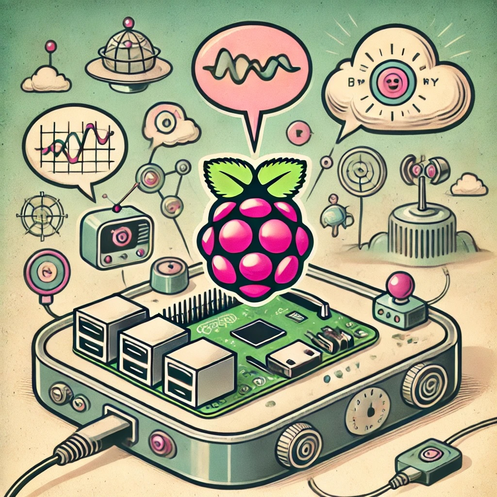
Overview
In the fast-growing area of artificial intelligence, edge computing offers a way to decentralize capabilities traditionally reserved for centralized servers. This lab integrates small versions of traditional large language models (LLMs) into a Raspberry Pi 5, turning this edge device into an AI hub capable of real-time, on-site data processing.
As large language models grow in size and complexity, Small Language Models (SLMs) offer an alternative for edge devices, balancing performance and resource efficiency. Running these models directly on a Raspberry Pi supports responsive, privacy-preserving applications that operate even in environments with limited or no internet connectivity.
This lab guides you through setting up, optimizing, and using SLMs on a Raspberry Pi. It installs and uses Ollama, an open-source framework that runs LLMs locally on desktops or edge devices such as the Raspberry Pi or NVidia Jetson. Ollama is designed to be efficient, scalable, and easy to use, which makes it a good option for deploying AI models such as Microsoft Phi, Google Gemma, Meta Llama, and the multimodal MoonDream and LLaVa. Some of those models are integrated into projects using Python’s ecosystem, to show their potential in real-world scenarios (or at least point in that direction).
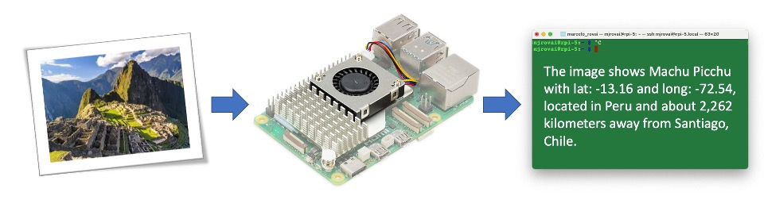
Setup
Any Raspi model could be used in the previous labs, but here the choice must be the Raspberry Pi 5 (Raspi-5). It substantially upgrades the previous version 4 and is equipped with the Broadcom BCM2712, a 2.4 GHz quad-core 64-bit Arm Cortex-A76 CPU featuring Cryptographic Extension and enhanced caching capabilities. It boasts a VideoCore VII GPU, dual 4Kp60 HDMI® outputs with HDR, and a 4Kp60 HEVC decoder. Memory options include 4 GB and 8 GB of high-speed LPDDR4X SDRAM, with 8 GB being the choice to run SLMs. It also features expandable storage via a microSD card slot and a PCIe 2.0 interface for fast peripherals such as M.2 SSDs (Solid State Drives).
For real SSL applications, SSDs are a better option than SD cards.
As Alasdair Allan discussed, inference directly on the Raspberry Pi 5 CPU, with no GPU acceleration, is now on par with the performance of the Coral TPU.
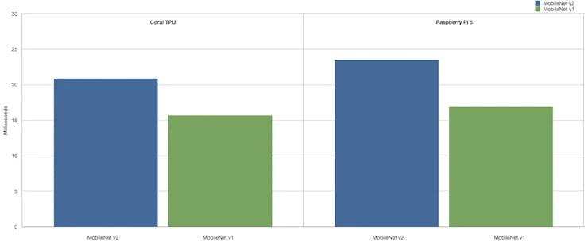
For more information, see the complete article: Benchmarking TensorFlow and TensorFlow Lite on Raspberry Pi 5.
Raspberry Pi Active Cooler
Install an Active Cooler, a dedicated clip-on cooling solution for Raspberry Pi 5 (Raspi-5), for this lab. It combines an aluminum heat sink with a temperature-controlled blower fan to keep the Raspi-5 within safe temperatures under heavy loads, such as running SLMs.
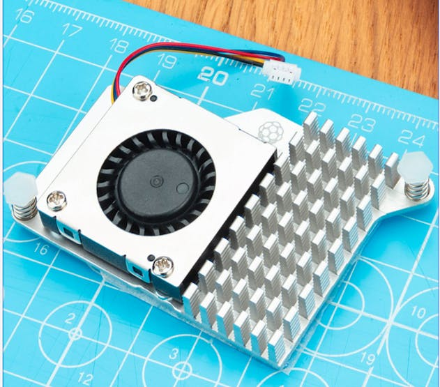
The Active Cooler has pre-applied thermal pads for heat transfer and is mounted directly to the Raspberry Pi 5 board using spring-loaded push pins. The Raspberry Pi firmware actively manages it: at 60°C, the blower’s fan will be turned on; at 67.5°C, the fan speed will be increased; and finally, at 75°C, the fan increases to full speed. The blower’s fan will spin down automatically when the temperature drops below these limits.
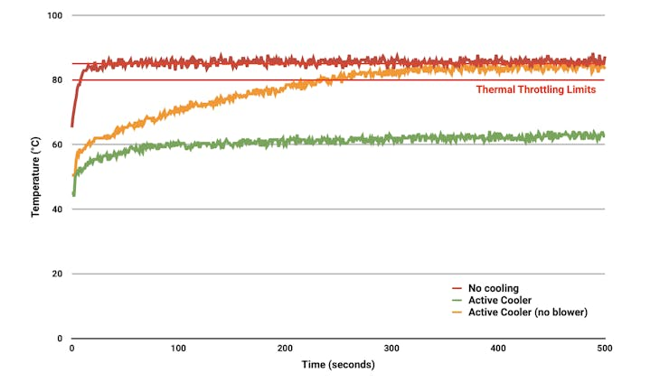
To prevent overheating, all Raspberry Pi boards begin to throttle the processor when the temperature reaches 80°Cand throttle even further when it reaches the maximum temperature of 85°C (more detail here).
Generative AI (GenAI)
Generative AI is an artificial intelligence system capable of creating new content in various media such as text, images, audio, and video. These systems learn patterns from existing data and use that knowledge to generate outputs that did not previously exist. Large Language Models (LLMs), Small Language Models (SLMs), and multimodal models can all be considered types of GenAI when used for generative tasks.
GenAI provides the conceptual framework for AI-driven content creation, with LLMs serving as general-purpose text generators. SLMs adapt this technology for edge computing, while multimodal models extend GenAI across different data types. Together, they form a spectrum of generative AI technologies, each with its own strengths and applications.
Large Language Models (LLMs)
Large Language Models (LLMs) are artificial intelligence systems that understand, process, and generate human-like text. They are characterized by their scale, both in the amount of data they are trained on and in the number of parameters they contain. Key aspects of LLMs include:
Size: LLMs typically contain billions of parameters. For example, GPT-3 has 175 billion parameters, while some newer models exceed a trillion parameters.
Training Data: They are trained on vast amounts of text data, often including books, websites, and other diverse sources, amounting to hundreds of gigabytes or even terabytes of text.
Architecture: Most LLMs use transformer-based architectures, which allow them to process and generate text by paying attention to different parts of the input simultaneously.
Capabilities: LLMs can perform a wide range of language tasks without specific fine-tuning, including:
- Text generation
- Translation
- Summarization
- Question answering
- Code generation
- Logical reasoning
Few-shot Learning: They can often understand and perform new tasks with minimal examples or instructions.
Resource-Intensive: Because of their size, LLMs typically require significant computational resources to run, often needing large GPUs or TPUs.
Continual Development: The field of LLMs is rapidly evolving, with new models and techniques constantly emerging.
Ethical Considerations: The use of LLMs raises important questions about bias, misinformation, and the environmental impact of training such large models.
Applications: LLMs are used in various fields, including content creation, customer service, research assistance, and software development.
Limitations: Despite their capabilities, LLMs can produce incorrect or biased information and lack true understanding or reasoning capabilities.
Large models are also used beyond text, and these are called multi-modal models. These models integrate and process information from multiple types of input simultaneously. They are designed to understand and generate content across various forms of data, such as text, images, audio, and video.
Closed vs Open Models:
Closed models, also called proprietary models, are AI models whose internal workings, code, and training data are not publicly disclosed. Examples: GPT-4 (by OpenAI), Claude (by Anthropic), Gemini (by Google).
Open models, also known as open-source models, are AI models whose underlying code, architecture, and often training data are publicly available and accessible. Examples: Gemma (by Google), LLaMA (by Meta) and Phi (by Microsoft).
Open models are particularly relevant for running models on edge devices like Raspberry Pi as they can be more easily adapted, optimized, and deployed in resource-constrained environments. Still, their licenses must be verified. Open models come with various open-source licenses that may affect their use in commercial applications, while closed models have clear, albeit restrictive, terms of service.
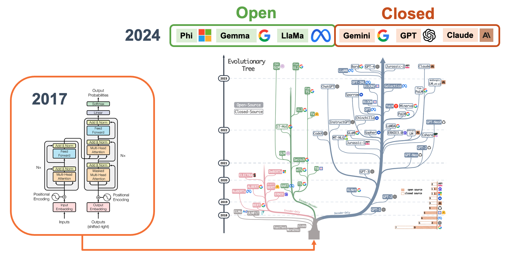
Small Language Models (SLMs)
In the context of edge computing on devices like Raspberry Pi, full-scale LLMs are typically too large and resource-intensive to run directly. This limitation has driven the development of smaller, more efficient models, such as the Small Language Models (SLMs).
SLMs are compact versions of LLMs designed to run efficiently on resource-constrained devices such as smartphones, IoT devices, and single-board computers like the Raspberry Pi. These models are much smaller in size and computational requirements than their larger counterparts while retaining useful language understanding and generation capabilities.
Key characteristics of SLMs include:
Reduced parameter count: Typically ranging from a few hundred million to a few billion parameters, compared to two-digit billions in larger models.
Lower memory footprint: Requiring, at most, a few gigabytes of memory rather than tens or hundreds of gigabytes.
Faster inference time: Can generate responses in milliseconds to seconds on edge devices.
Energy efficiency: Consuming less power, making them suitable for battery-powered devices.
Privacy-preserving: Enabling on-device processing without sending data to cloud servers.
Offline functionality: Operating without an internet connection.
SLMs achieve their compact size through various techniques such as knowledge distillation, model pruning, and quantization. While they may not match the broad capabilities of larger models, SLMs perform well in specific tasks and domains, which suits targeted applications on edge devices.
Here, SLMs are language models with fewer than 5 billion parameters quantized to 4 bits.
Examples of SLMs include compressed versions of models like Meta Llama, Microsoft PHI, and Google Gemma. These models enable a wide range of natural language processing tasks directly on edge devices, from text classification and sentiment analysis to question answering and limited text generation.
For more information on SLMs, the paper, LLM Pruning and Distillation in Practice: The Minitron Approach, describes an approach that applies pruning and distillation to obtain SLMs from LLMs. And, SMALL LANGUAGE MODELS: SURVEY, MEASUREMENTS, AND INSIGHTS, presents a survey and analysis of Small Language Models (SLMs), which are language models with 100 million to 5 billion parameters designed for resource-constrained devices.
Ollama
Ollama is the most user-friendly tool for running Small Language Models (SLMs) directly on a Raspberry Pi, especially the Pi 5. It is an open-source framework that installs, manages, and runs various SLMs (such as TinyLlama, SmolLM, Microsoft Phi, Google Gemma, Meta Llama, MoonDream, and LLaVa) locally, for tasks such as text generation, image captioning, and translation.
llama.cpp and the Hugging Face Transformers library are also well supported on the Raspberry Pi. llama.cpp is particularly efficient for running quantized models natively (Ollama runs llama.cpp under the hood), while Transformers offers a broader range of models and tasks, best suited to smaller architectures on this hardware. For production deployments on edge devices, Google AI Edge’s LiteRT-LM is a good option.
Key points about Ollama:
Local Model Execution: Ollama enables running LMs on personal computers or edge devices such as the Raspi-5, eliminating the need for cloud-based API calls.
Ease of Use: It provides a simple command-line interface for downloading, running, and managing different language models.
Model Variety: Ollama supports various LLMs, including Phi, Gemma, Llama, Mistral, and other open-source models.
Customization: Users can create and share custom models tailored to specific needs or domains.
Lightweight: Designed to be efficient and run on consumer-grade hardware.
API Integration: Offers an API that allows integration with other applications and services.
Privacy-Focused: By running models locally, it addresses privacy concerns associated with sending data to external servers.
Cross-Platform: Available for macOS, Windows, and Linux systems (our case, here).
Active Development: Regularly updated with new features and model support.
Community-Driven: Benefits from community contributions and model sharing.
To learn more about what Ollama is and how it works, watch this short video from Matt Williams, one of the founders of Ollama:
Matt has an entirely free course about Ollama that we recommend:
Installing Ollama
Set up and activate a virtual environment for working with Ollama:
python3 -m venv ~/ollama
source ~/ollama/bin/activateAnd run the command to install Ollama:
curl -fsSL https://ollama.com/install.sh | shAs a result, an API will run in the background on 127.0.0.1:11434. From now on, we can run Ollama via the terminal. To start, verify the Ollama version, which also confirms that Ollama is correctly installed:
ollama -v
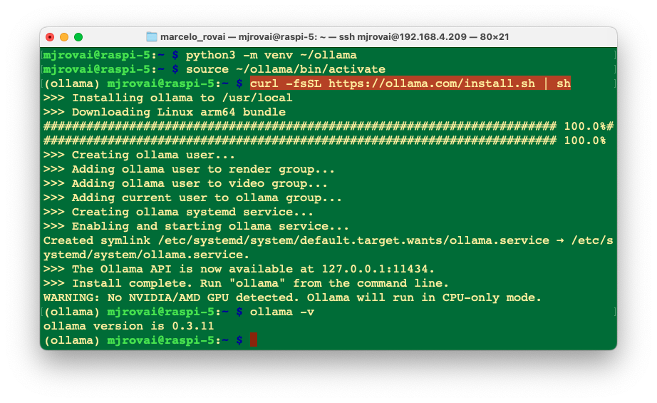
On the Ollama Library page, we can find the models Ollama supports. For example, by filtering by Most popular, we can see Meta Llama, Google Gemma, Microsoft Phi, LLaVa, etc.
Meta Llama 3.2 1B/3B
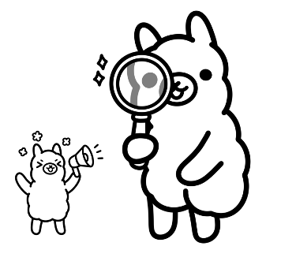
Install and run the first small language model, Llama 3.2 1B (and 3B). The Meta Llama 3.2 series comprises a set of multilingual generative language models available in 1 billion and 3 billion parameter sizes. These models are designed to process text input and generate text output. The instruction-tuned variants are optimized for multilingual conversational applications, including information retrieval and summarization with an agentic approach. Compared with many existing open-source and proprietary chat models, the Llama 3.2 instruction-tuned models perform better on widely used industry benchmarks.
The 1B and 3B models were pruned from the Llama 8B, and then logits from the 8B and 70B models were used as token-level targets (token-level distillation). Knowledge distillation was used to recover performance (they were trained with 9 trillion tokens). The 1B model has 1,24B, quantized to integer (Q8_0), and the 3B, 3.12B parameters, with a Q4_0 quantization, which ends with a size of 1.3 GB and 2 GB, respectively. Its context window is 131,072 tokens.
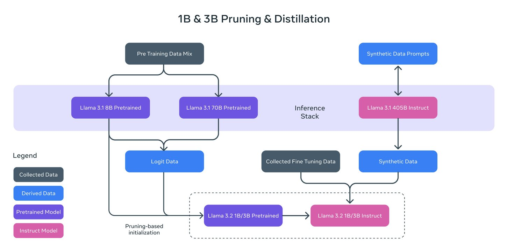
Install and run the Model
ollama run llama3.2:1bRunning the model with the command above gives an Ollama prompt where you can input a question and start chatting with the LLM; for example,
>>> What is the capital of France?
Almost immediately, the model gives the correct answer:
The capital of France is Paris.
Using the option --verbose when calling the model will generate several statistics about its performance (The model will be polling only the first time we run the command).
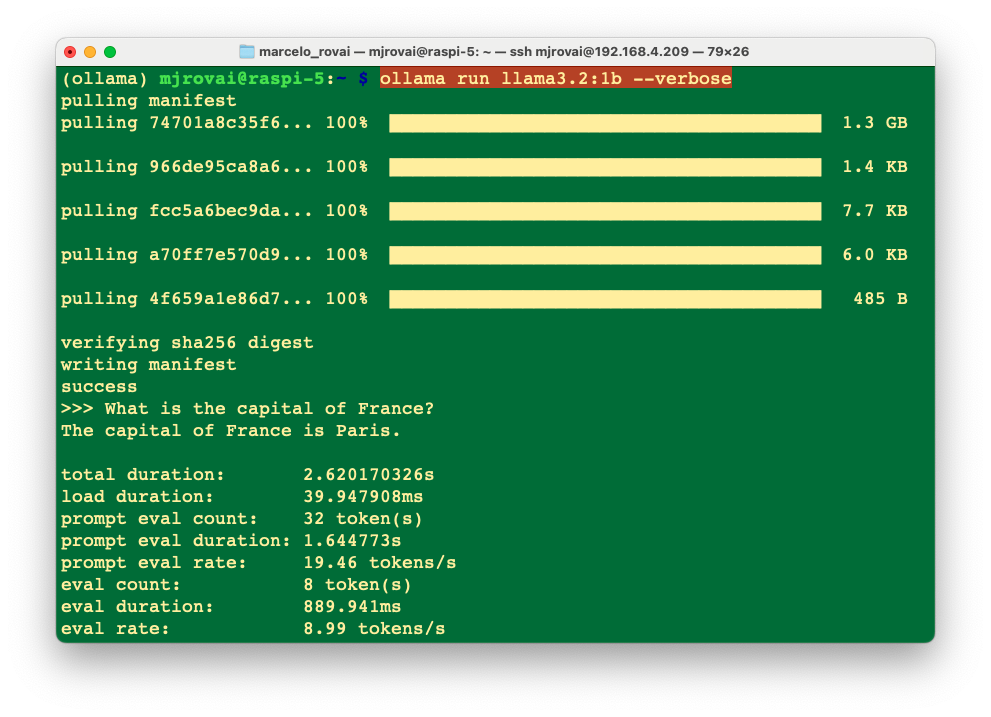
Each metric shows how the model processes inputs and generates outputs:
- Total Duration (2.620170326 s): This is the complete time taken from the start of the command to the completion of the response. It encompasses loading the model, processing the input prompt, and generating the response.
- Load Duration (39.947908 ms): This duration indicates the time to load the model or necessary components into memory. If this value is minimal, it can suggest that the model was preloaded or that only a minimal setup was required.
- Prompt Eval Count (32 tokens): The number of tokens in the input prompt. In NLP, tokens are typically words or subwords, so this count includes all the tokens that the model evaluated to understand and respond to the query.
- Prompt Eval Duration (1.644773 s): This measures the model’s time to evaluate or process the input prompt. It accounts for the bulk of the total duration, implying that understanding the query and preparing a response is the most time-consuming part of the process.
- Prompt Eval Rate (19.46 tokens/s): This rate indicates how quickly the model processes tokens from the input prompt. It reflects the model’s speed in terms of natural language comprehension.
- Eval Count (8 token(s)): This is the number of tokens in the model’s response, which in this case was, “The capital of France is Paris.”
- Eval Duration (889.941 ms): This is the time taken to generate the output based on the evaluated input. It is much shorter than the prompt evaluation, suggesting that generating the response is less computationally intensive than processing the prompt.
- Eval Rate (8.99 tokens/s): Similar to the prompt eval rate, this indicates the speed at which the model generates output tokens. It is the key metric for the model’s efficiency in output generation.
This breakdown shows the computational demands of running SLMs like Llama on edge devices like the Raspberry Pi 5. Prompt evaluation takes more time, while generating the response is relatively quicker. This analysis helps optimize performance and diagnose bottlenecks in real-time applications.
Loading and running the 3B model shows the difference in performance for the same prompt.
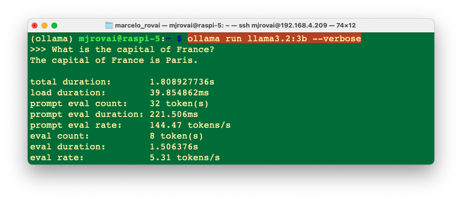
The eval rate is lower, 5.3 tokens/s versus 9 tokens/s with the smaller model.
When asked about
>>> What is the distance between Paris and Santiago, Chile?
The 1B model answered 9,841 kilometers (6,093 miles), which is inaccurate, and the 3B model answered 7,300 miles (11,700 km), which is close to the correct (11,642 km).
Ask for the coordinates of Paris:
>>> what is the latitude and longitude of Paris?
The latitude and longitude of Paris are 48.8567° N (48°55'
42" N) and 2.3510° E (2°22' 8" E), respectively.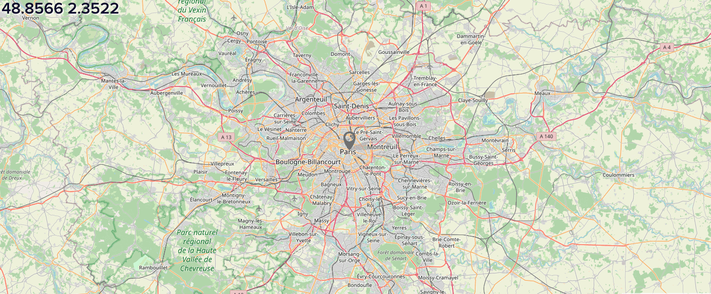
Both 1B and 3B models gave correct answers.
Google Gemma
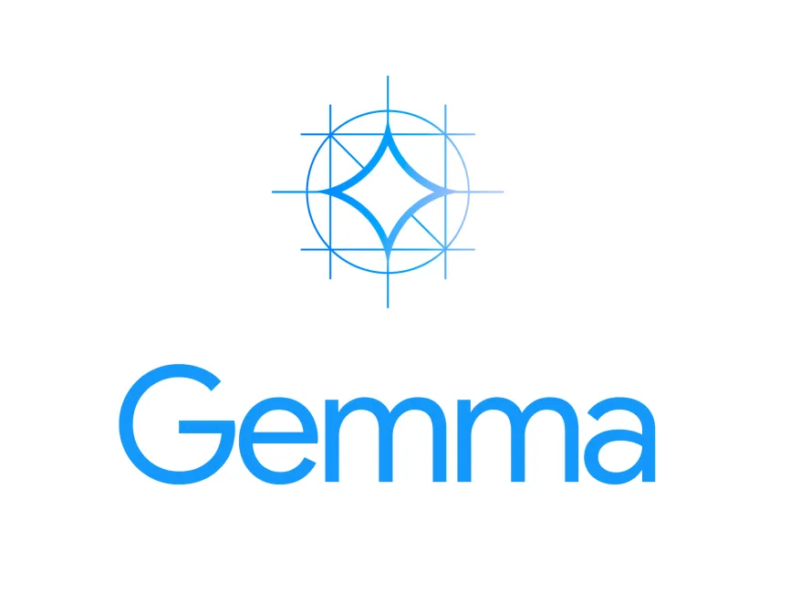
Google Gemma is a collection of lightweight open models built from the same technology that powers Google’s Gemini models. The family includes the Gemma 3, Gemma 3n, and Gemma 4 models.
Gemma 3
Install, for example, gemma3:4b. This model has 4.3B parameters, with a context length of 131,072 tokens and an embedding length of 2,560, and a typical quantization scheme of Q4_K_M. It also has vision capabilities. A 1B-parameter model is available as well.
Install and run the Model
ollama run gemma3:4b --verboseRunning the model with the command above gives an Ollama prompt where you can input a question and start chatting with the LLM; for example,
>>> What is the capital of France?
Almost immediately, the model gives the correct answer:
The capital of France is **Paris**. It's a global center for art, fashion, gastronomy, and culture. 😊 Do you want to know anything more about Paris?
And its statistics:
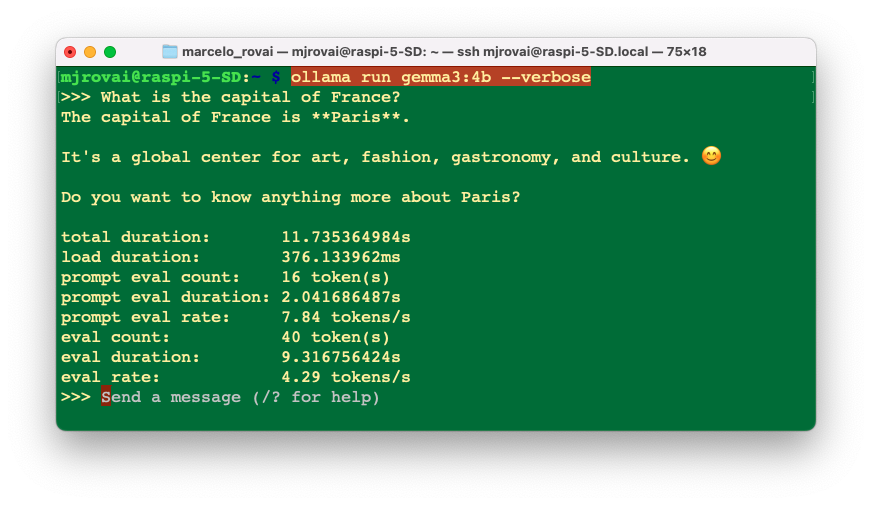
Gemma 3 4B has roughly the same performance as Llama 3.2 3B, despite having more parameters.
Other examples:
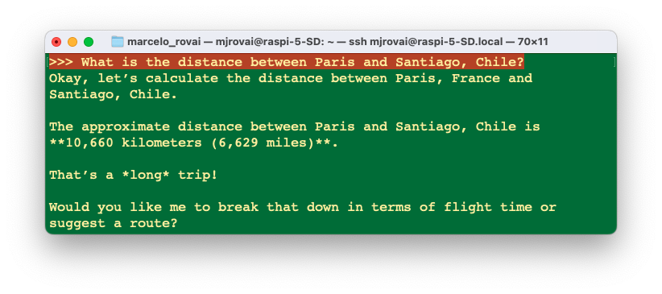
Also a good response, but less accurate than Llama 3.2 3B.
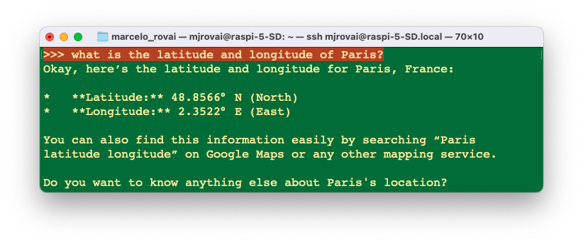
A good and accurate answer (a little more verbose than the Llama answers).
An advantage of the Gemma 3 models is their vision capability; for example, the model can caption an image:
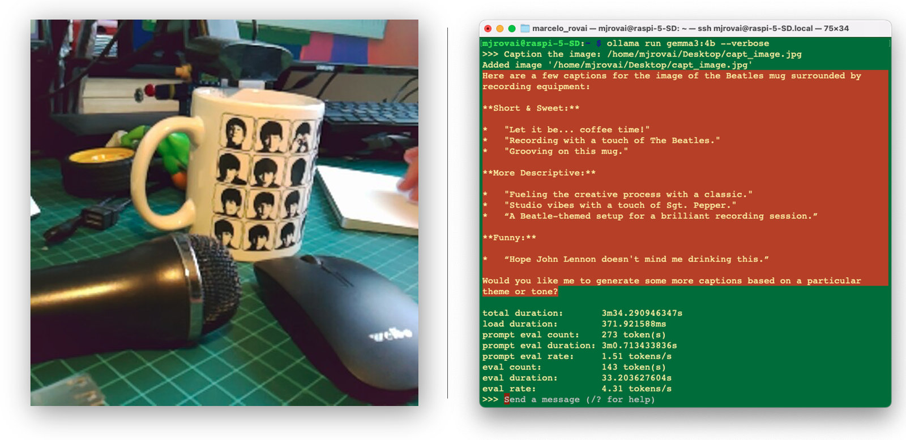
The caption is very accurate, but the latency is high: more than 3 minutes for this image.
The Gemma 3 1B model is text-only and does not support image input.
Gemma 3n
Gemma 3n is an efficient open model designed to run locally on phones, tablets, and laptops. Its models are listed with parameter counts, such as E2B and E4B, that are lower than the total number of parameters they contain. The E prefix indicates that these models can operate with a reduced set of Effective parameters, thanks to the flexible parameter technology built into Gemma 3n, which helps them run efficiently on lower-resource devices.
The parameters of Gemma 3n models are divided into four groups: text, visual, audio, and per-layer embedding (PLE) parameters. In the standard execution of the E2B model, over 5 billion parameters are loaded. With parameter skipping and PLE caching, the model operates with an effective memory load of just under 2 billion (1.91B) parameters:
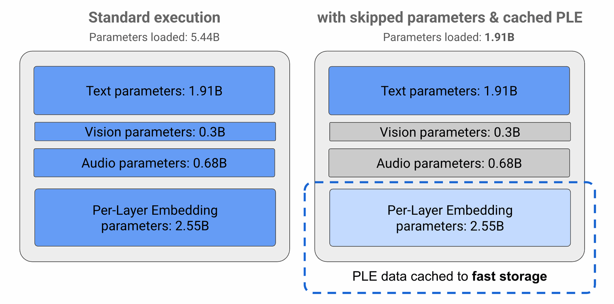
Once installed (using ollama run gemma3n:e2b), inspecting the model shows:
- Architecture: gemma3n
- Parameters: 4.5B
- Context length: 32768
- Embedding length: 2048
- Quantization: Q4_K_M
- Capabilities: completion only
Despite having 4.5B parameters, it runs faster than Llama 3.2 3B:
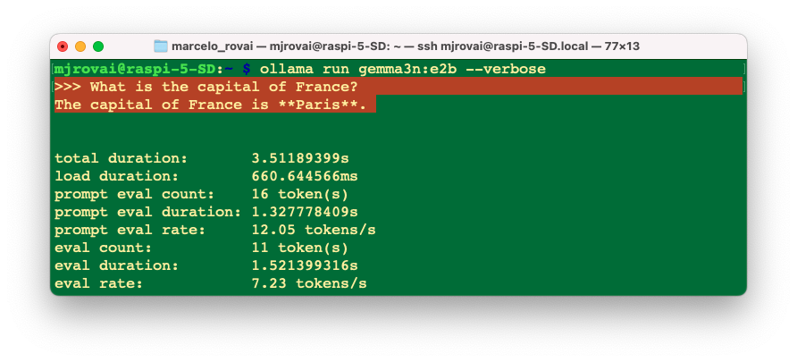
Gemma 4
Google presents Gemma 4 as a family built for reasoning, agentic workflows, coding, and multimodal understanding, released under the commercially permissive Apache 2.0 license. Its two smallest models, E2B and E4B, are built for compute and memory efficiency: during inference, they operate with an effective footprint of 2 and 4 billion parameters. They are multimodal and run fully offline on phones, the Raspberry Pi, and the NVIDIA Jetson Orin Nano.
Gemma 4 E2B and E4B are too heavy to run comfortably on a Raspberry Pi 5 with Ollama, but E2B runs well with llama.cpp and with Google AI Edge’s LiteRT-LM.
Microsoft Phi3.5 3.8B
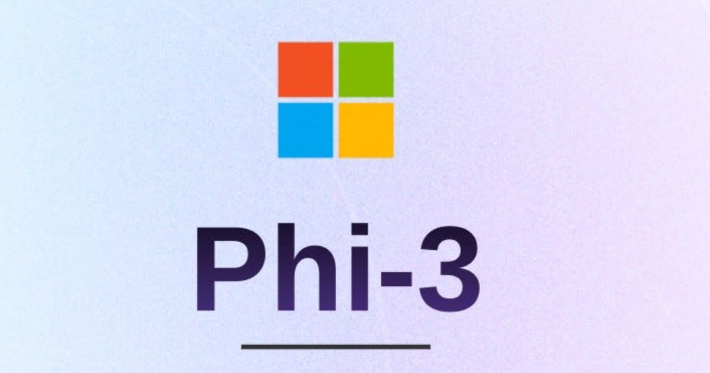
Pull a bigger (but still small) model, PHI3.5, a 3.8B lightweight open model by Microsoft. The model belongs to the Phi-3 model family and supports 128K token context length and the languages: Arabic, Chinese, Czech, Danish, Dutch, English, Finnish, French, German, Hebrew, Hungarian, Italian, Japanese, Korean, Norwegian, Polish, Portuguese, Russian, Spanish, Swedish, Thai, Turkish and Ukrainian.
The model size, in terms of bytes, will depend on the specific quantization format used. The size can go from 2-bit quantization (q2_k) of 1.4 GB (higher performance/lower quality) to 16-bit quantization (fp-16) of 7.6 GB (lower performance/higher quality).
Run the 4-bit quantization (Q4_0), which needs 2.2 GB of RAM and offers an intermediate trade-off between output quality and performance.
ollama run phi3.5:3.8b --verboseYou can use
runorpullto download the model. What happens is that Ollama keeps note of the pulled models, and once the PHI3 does not exist, before running it, Ollama pulls it.
Enter the same prompt used before:
>>> What is the capital of France?
The capital of France is Paris. It' extradites significant
historical, cultural, and political importance to the country as
well as being a major European city known for its art, fashion,
gastronomy, and culture. Its influence extends beyond national
borders, with millions of tourists visiting each year from around
the globe. The Seine River flows through Paris before it reaches
the broader English Channel at Le Havre. Moreover, France is one
of Europe's leading economies with its capital playing a key role
...The answer was very verbose, so specify a better prompt:
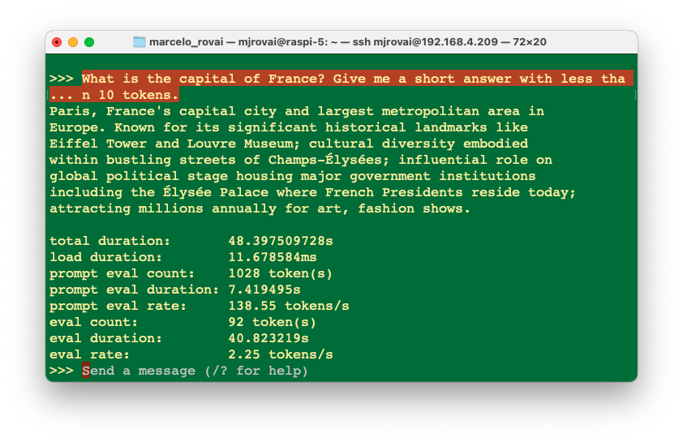
In this case, the answer was still longer than we expected, with an eval rate of 2.25 tokens/s, less than half that of Gemma and Llama.
Choosing an appropriate prompt is one of the most important skills for working with LLMs, whatever their size.
When we asked the same questions about distance and Latitude/Longitude, we did not get a good answer for a distance of 13,507 kilometers (8,429 miles), but it was OK for coordinates. Again, it could have been less verbose (more than 200 tokens for each answer).
Any of these models can serve as an assistant since their speed is relatively decent, but at the time of writing, Llama 3.2 3B and Gemma 3 are better choices. Try other models, depending on your needs. 🤗 Open LLM Leaderboard can give you an idea about the best models in size, benchmark, license, etc.
The best model is the one that fits your specific needs. The field also evolves, with new models appearing every day.
Multimodal Models
Multimodal models are artificial intelligence (AI) systems that can process information from multiple sources, such as images, text, audio, and video. In this context, multimodal LLMs can process various inputs, including text, images, and audio, as prompts and convert those prompts into various outputs, not just the source type.
Besides Gemma 3, this lab explores two compact multimodal models: MoonDream and LLaVA-Phi-3.
MoonDream
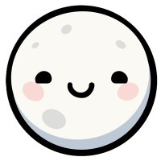
Moondream is a compact, open-source vision-language model (VLM) that analyzes images and generates descriptive text, answers questions, detects objects, counts, points, and performs OCR, all through natural-language instructions, even on resource-limited devices like the Raspberry Pi. It is 3 to 4 times faster than Gemma 3, for example.
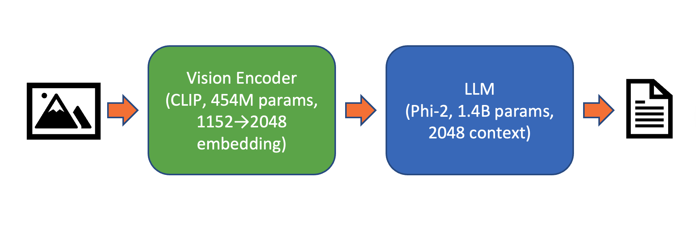
The diagram below shows the flow from an image to its description:
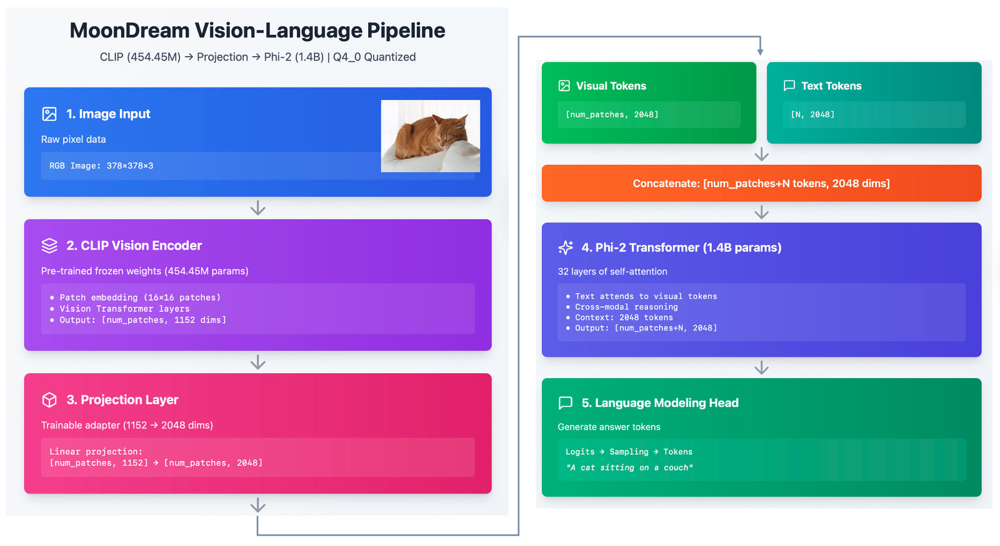
Moondream can interpret images much like a human would, enabling tasks like:
- Captioning and describing images in detail
- Visual question answering (VQA), such as “What is the color of the shirt?”
- Object detection and pointing out locations
- Counting and contextual reasoning about visual scenes
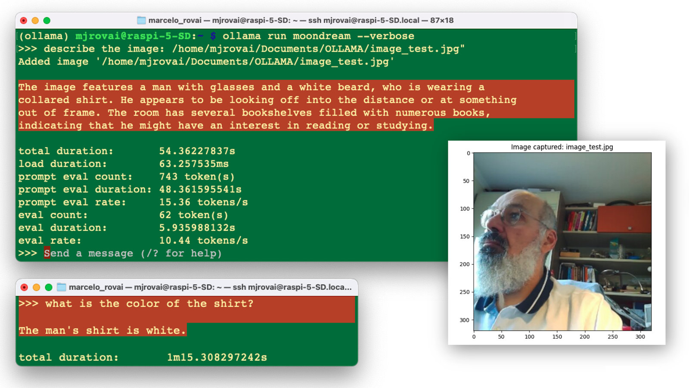
LLaVA-Phi-3
LLaVA-Phi-3 is a fine-tuned LLaVA model from Phi 3 Mini 4k. Its benchmark performance is on par with the original LLaVA (Large Language and Vision Assistant) model. In terms of latency, it is on par with Gemma 3 and much slower than MoonDream.
The LLaVA-Phi-3 is an end-to-end trained large multimodal model designed to understand and generate content based on visual inputs (images) and textual instructions. It combines the capabilities of a visual encoder and a language model to process and respond to multimodal inputs.
Install the model:
ollama run llava-phi3:3.8b --verboseStart with a text input:
>>> You are a helpful AI assistant.
What is the capital of France?
As an AI language model, I can tell you that the capital of
France is Paris. It's not only the largest city in the country
but also serves as its political and administrative center.
Paris is known for its iconic landmarks such as the Eiffel
Tower, Notre-Dame Cathedral, and the Louvre Museum. The city
has a rich history, beautiful architecture, and is widely
considered to be one of the most romantic cities in the world.The response took around 30 s, with an eval rate of 3.93 tokens/s.
Now enter an image as input. For that, create a working directory:
cd Documents/
mkdir OLLAMA
cd OLLAMADownload a \(640\times 400\) image from the internet, for example (Wikimedia Commons: Paris, France):
.jpg){kind=link}
Using FileZilla, for example, upload the image to the OLLAMA folder on the Raspi-5 and name it image_test_1.jpg. You need the whole image path (use pwd to get it).
/home/mjrovai/Documents/OLLAMA/image_test_1.jpg
If you use a desktop, you can copy the image path by clicking the image with the mouse’s right button.
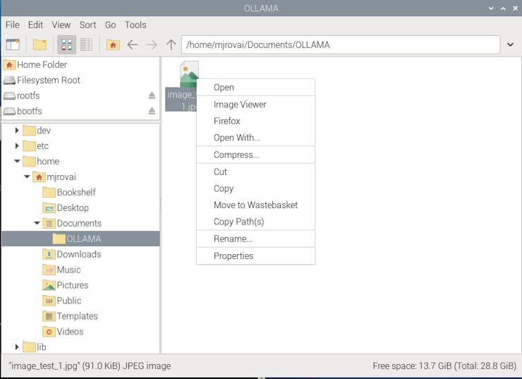
Enter this prompt:
>>> Describe the image /home/mjrovai/Documents/OLLAMA/\
image_test_1.jpgThe result was good, but the latency was high: almost 4 minutes to perform the inference.
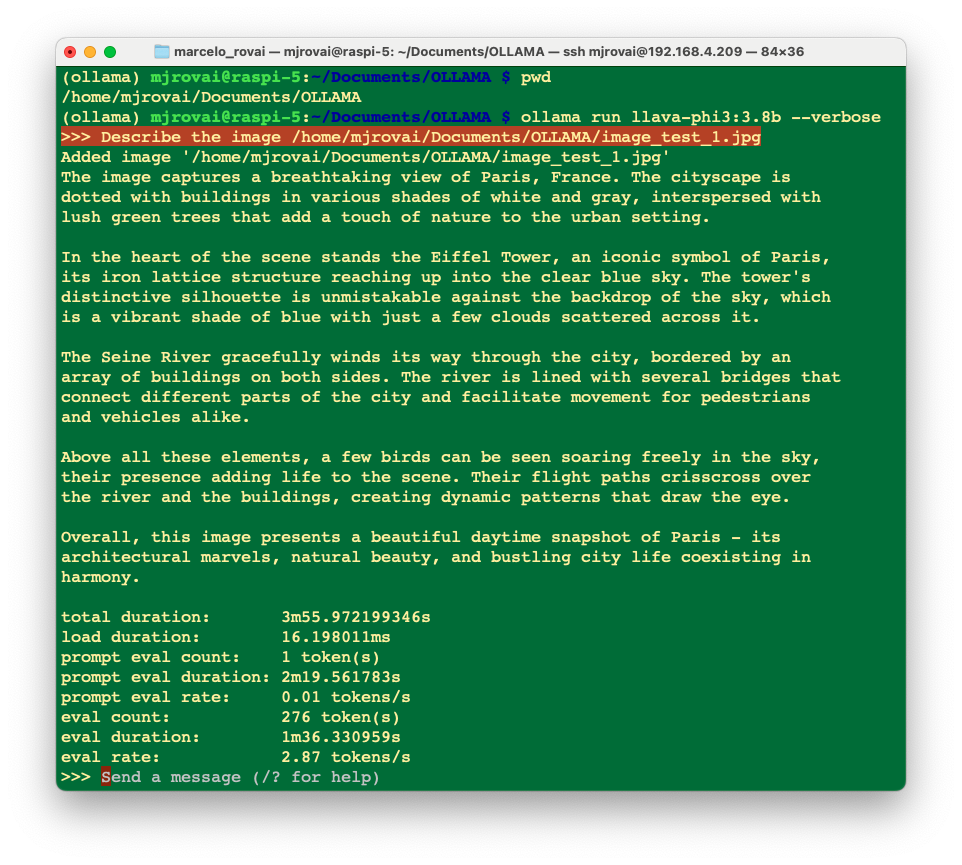
Ollama Commands
Inside a model session, Ollama has several commands, accessed with /, such as /bye to exit or /set to toggle session variables such as verbose/quiet (to show statistics like tokens/s and latency) and think/nothink (to turn the thinking mode on or off in models that “reason”, such as Qwen and Gemma).
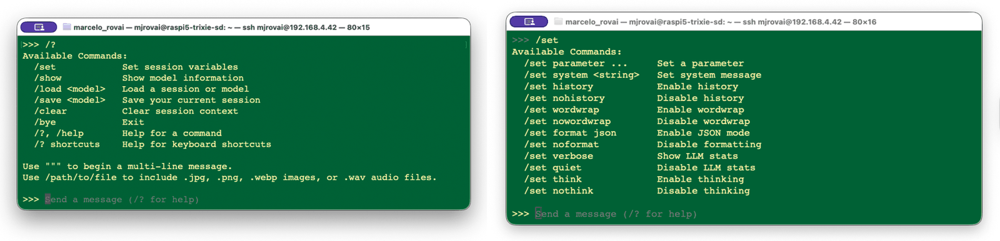
Inspecting Model Parameters
The command ollama show <model> gives more information about each downloaded model. For example:
ollama show llama3.2:3b
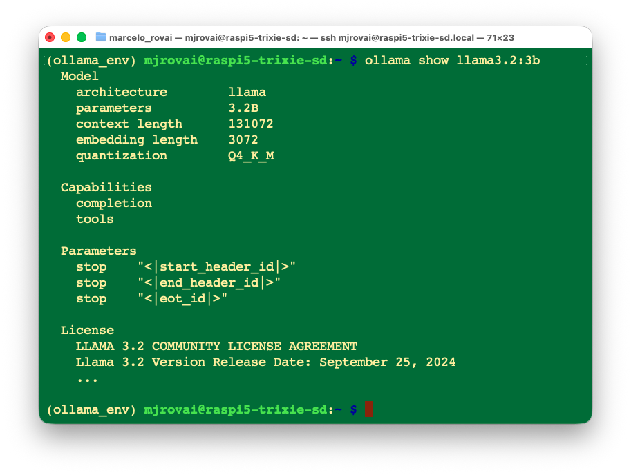
This is a 3.2B-parameter Llama-family instruction model, quantized for efficient local use. The fields mean:
- Architecture:
llama: A Llama-style decoder-only transformer, the same general architecture as Meta’s Llama 3.x family (causal language model, multi-head attention, MLP blocks, rotary position embeddings). - Parameters:
3.2B: About 3.2 billion trainable parameters, much larger than 1B models but far below 7B, 8B, or 70B models. - Capabilities:
completion,tools:completionis classic text generation.toolsmeans the model was trained to call tools or functions (e.g., JSON function calls) when the host runtime exposes them. The tools are not built into the model; the model knows how to format tool calls when the surrounding system supports them. - Quantization:
Q4_K_M: A 4-bit K-quantization variant from the GGUF family. Weights take about 4 bits per parameter instead of 16 or 32, which drastically reduces RAM and disk size, so a 3.2B model runs comfortably on a Pi 5 CPU. The quality drop is small for chat, simple coding, and small reasoning tasks. - Context length:
131072: About 131k tokens, large enough to ingest long documents or extended conversations. - Embedding length:
3072: Each token is represented internally as a 3072-dimensional vector. Wider models can represent richer patterns but cost more per token. - License:
LLAMA 3.2 COMMUNITY LICENSE AGREEMENT: A community license, not a standard open-source one. It allows research and many commercial uses, with conditions, so read the license before using the model in a product. - Parameters: The Modelfile sets only three stop strings (
<|start_header_id|>,<|end_header_id|>, and<|eot_id|>). Sampling settings such astemperature,top_k, andtop_pare not defined, so Ollama’s defaults apply (temperature 0.8,top_p 0.9,top_k 40). These parameters are discussed in Section 0.5.1.3.
Inspecting local resources
Using htop, we can monitor the resources running on our device.
htopDuring the time that the model is running, we can inspect the resources:
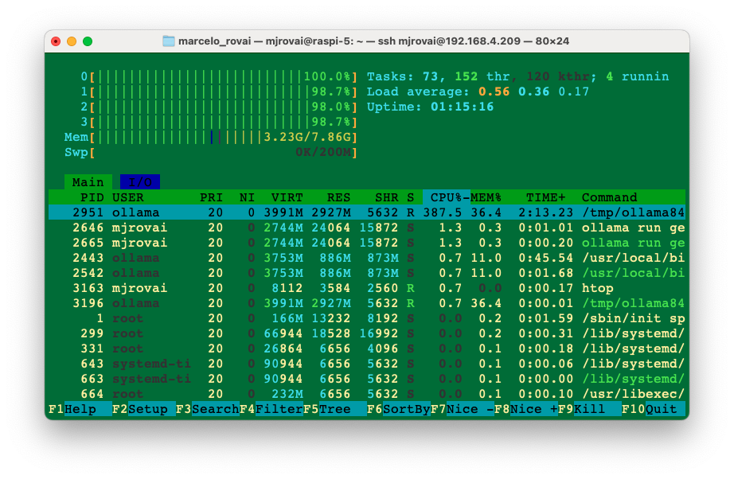
All four CPUs run at almost 100% of their capacity, and the memory used with the model loaded is 3.24 GB. Exiting Ollama, the memory goes down to around 377 MB (with no desktop).
The temperature must also be monitored. When running the Raspberry with a desktop, you can have the temperature shown on the taskbar:
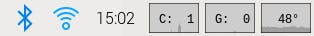
If you are “headless”, the temperature can be monitored continuously (for example, every 2 seconds) with the command:
watch -n 2 vcgencmd measure_tempIf you are doing nothing, the temperature is around 50°C for CPUs running at 1%. During inference, with the CPUs at 100%, the temperature can rise to almost 70°C. This is acceptable and means the active cooler is working, keeping the temperature below 80°C / 85°C (its limit).
Ollama Python Library
So far, we have explored SLMs’ chat capability using the command line on a terminal. To integrate those models into projects, Python is a natural choice, and Ollama provides a library for it.
The Ollama Python library simplifies interaction with LLM models and is the easiest way to integrate Python 3.8+ projects with Ollama.
For a better understanding of how to create apps using Ollama with Python, we can follow Matt Williams’s videos, such as the one below:
Installation:
In the terminal (and inside the virtual environment), run the command:
pip install ollamaTest the installation in the terminal using the Python interpreter:
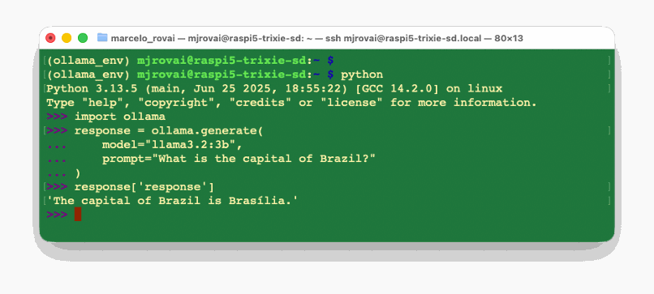
We will need a text editor or an IDE to create a Python script. If you run the Raspberry Pi OS on a desktop, several options, such as Thonny and Geany, are already installed by default (accessed by [Menu][Programming]). You can download other IDEs, such as Visual Studio Code, from [Menu][Recommended Software]. When the window pops up, go to [Programming], select the option of your choice, and press [Apply].
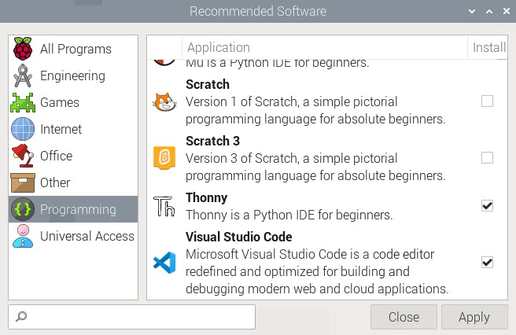
If you prefer using Jupyter Notebook for development:
pip install jupyter
jupyter notebook --generate-configTo run Jupyter Notebook, run the command (change the IP address for yours):
jupyter notebook --ip=192.168.4.209 --no-browserOn the terminal, you can see the local URL address to open the notebook:
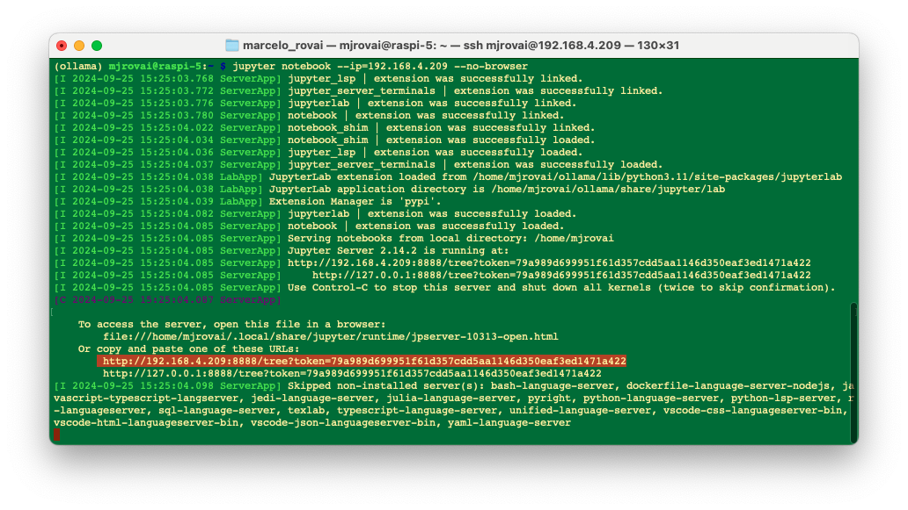
We can access it from another computer by entering the Raspberry Pi’s IP address and the provided token in a web browser (we should copy it from the terminal).
In the working directory on the Raspi (Documents/OLLAMA/), create a new Python 3 notebook.
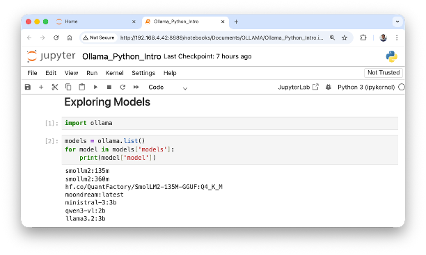
Enter a very simple script to verify the installed models:
import ollama
models = ollama.list()
for model in models["models"]:
print(model["model"])gemma3:4b
gemma3n:e2b
moondream:latest
llama3.2:3bAs with ollama show llama3.2:3b on the terminal, the Python command ollama.show() returns the model information:
info = ollama.show("llama3.2:3b")
details = info.details
print("Parameter Size :", details.parameter_size)
print("Quantization Level :", details.quantization_level)
print("Family :", details.family)
print("Supported Capabilities:", info.capabilities)
print("Date Modified (Local) :", info.modified_at)
print("License Short :", str(info.license).split("\n")[0])
print("Key Architecture Details:")
for key in [
"general.architecture",
"general.finetune",
"llama.context_length",
"llama.embedding_length",
"llama.block_count",
]:
print(f" - {key}: {info.modelinfo.get(key)}")As a result, we have:
Parameter Size : 3.2B
Quantization Level : Q4_K_M
Family : llama
Supported Capabilities: ['completion', 'tools']
Date Modified (Local) : 2025-09-15 15:39:48.153510-03:00
License Short : LLAMA 3.2 COMMUNITY LICENSE AGREEMENT
Key Architecture Details:
- general.architecture: llama
- general.finetune: Instruct
- llama.context_length: 131072
- llama.embedding_length: 3072
- llama.block_count: 28Besides the information shown on the terminal, two more fields are worth understanding:
general.finetune: Instruct: The base Llama model has been fine-tuned on instruction-following data (Q&A, chat, tool-using examples). It therefore expects prompts that look like “user asks, model answers” and tends to produce direct responses instead of random continuations.llama.block_count: 28: The transformer has 28 decoder blocks (layers). More layers typically improve multi-step reasoning. Compared with a 7B model (around 32 to 40 layers and a width of 4096 or more), this model is less capable on complex reasoning or coding, but noticeably more capable than 1B-class models.
Ollama Generate
Repeat one of the earlier questions, but now using ollama.generate() from the Ollama Python library. This API generates a response for the given prompt using the provided model. It is a streaming endpoint, so there will be a series of responses. The final response object includes statistics and additional data from the request.
response = ollama.generate(
model="llama3.2:3b",
prompt="What is the capital of Brazil?",
)
print(response["response"])We get the response: The capital of Brazil is Brasília.
If you are running the code as a Python script, save it as, for example,
test_ollama.py. You can run it from the IDE or directly in the terminal. When running a stand-alone script, always define the model in the script itself.python test_ollama.py
A small function makes working with the model easier:
MODEL = "llama3.2:3b"
def simple_query(prompt, model=MODEL):
return ollama.generate(model=model, prompt=prompt)Run a new query and print the full response:
response = simple_query("What is the capital of Peru?")
responseAs a result, we have the model response as a GenerateResponse object. Printed as JSON, it looks like this:
import json
print(json.dumps(response.__dict__, indent=2)){
"model": "llama3.2:3b",
"created_at": "2026-02-26T18:58:30.730414614Z",
"done": true,
"done_reason": "stop",
"total_duration": 2307368739,
"load_duration": 343767495,
"prompt_eval_count": 32,
"prompt_eval_duration": 722764406,
"eval_count": 8,
"eval_duration": 1229567370,
"response": "The capital of Peru is Lima.",
"thinking": null,
"context": [
128006,
9125,
...
13
],
"logprobs": null
}As we can see, several pieces of information are generated, such as:
response: the main output text generated by the model in response to our prompt.
The capital of Peru is Lima.
context: the token IDs representing the input and context used by the model. Tokens are numerical representations of text used for processing by the language model.
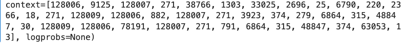
The Performance Metrics:
- total_duration: The total time taken for the operation in nanoseconds.
- load_duration: The time taken to load the model or components in nanoseconds.
- prompt_eval_duration: The time taken to evaluate the prompt in nanoseconds.
- eval_count: The number of tokens evaluated during the generation. Here, 8 tokens.
- eval_duration: The time taken for the model to generate the response in nanoseconds.
What we want is the plain response and, perhaps for analysis, the total duration of the inference, so change the code to extract them from the response:
print(f"\n{response['response']}")
print(
f"\nTotal Duration: "
f"{response['total_duration']/1e9:.2f} seconds"
)Now, we got:
The capital of Peru is Lima.
Total Duration: 2.31 secondsThe other metrics are also available:
eval_s = response["eval_duration"] / 1e9
print(f"eval_count: {response['eval_count']}")
print(f"eval_duration: {eval_s:.2f} s")
print(f"eval_rate: {response['eval_count']/eval_s:.2f} tokens/s")eval_count: 8
eval_duration: 1.23 s
eval_rate: 6.51 tokens/sStreaming with ollama.generate()
To stream the output from ollama.generate(), set stream=True and iterate over the generator to print each chunk as it is produced:
stream = ollama.generate(
model="llama3.2:3b",
prompt="Tell me an interesting fact about Brazil",
stream=True,
)
for chunk in stream:
print(chunk["response"], end="", flush=True)
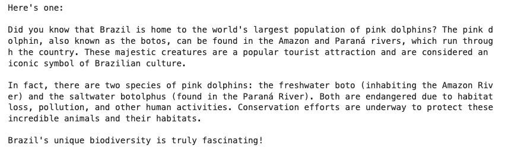
Each chunk["response"] is a part of the generated text, streamed as it is created. This is useful for long generations, because the user starts reading before the model has finished.
System Prompt
The system parameter sets overall instructions or behavior for the model, which is useful for role assignment and tone control:
response = ollama.generate(
model="llama3.2:3b",
prompt="Tell about industry",
system="You are an expert on Brazil.",
stream=False,
)
print(response["response"])
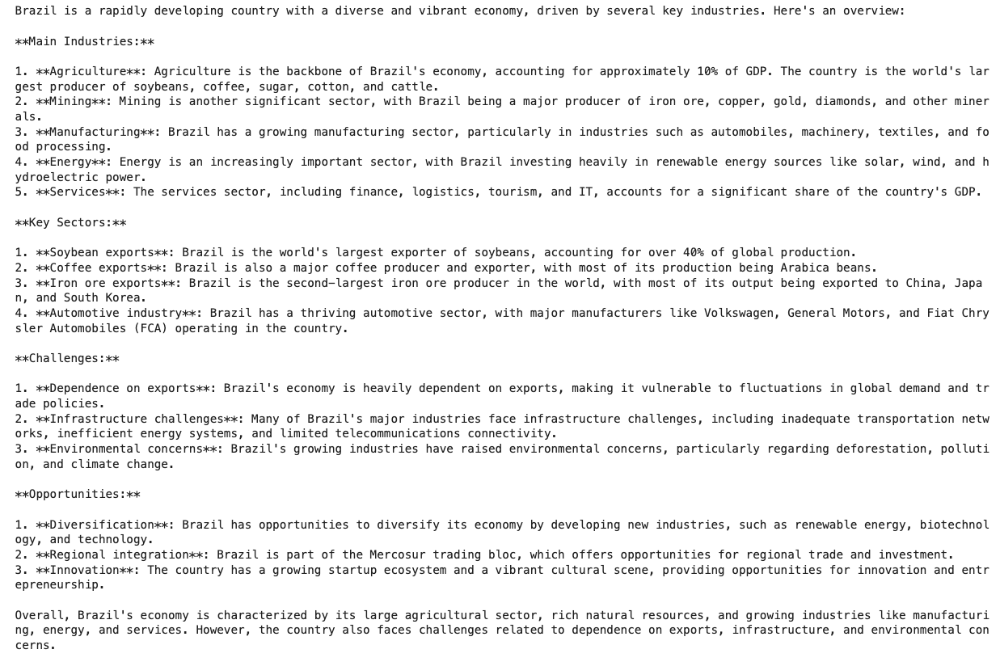
Temperature and Sampling
The temperature option controls creativity and randomness:
response = ollama.generate(
model="llama3.2:3b",
prompt="Why is the sky blue?",
options={"temperature": 0.1},
stream=True,
)
for chunk in response:
print(chunk["response"], end="", flush=True)
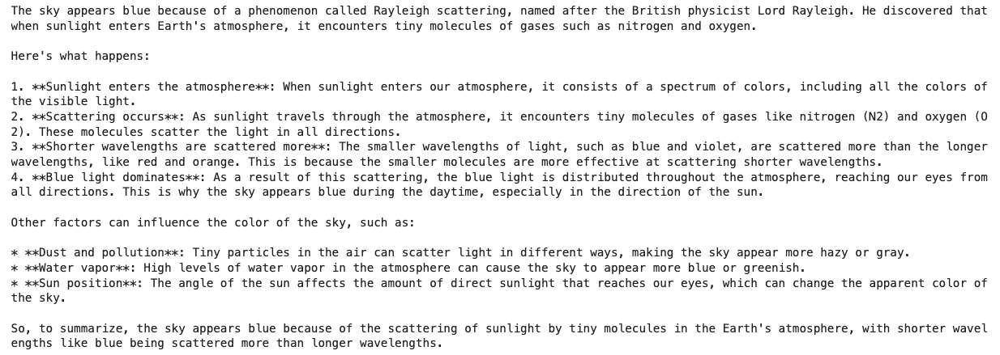
A higher temperature gives more creative answers:
response = ollama.chat(
model="llama3.2:3b",
messages=[
{
"role": "user",
"content": "Poetically describe Paris in one short sentence",
},
],
options={"temperature": 1.0},
)
print(response["message"]["content"])Like a velvet-draped secret, Paris whispers ancient mysteries to
the moonlit Seine, her sighing shadows weaving an eternal waltz of
love and dreams.Besides temperature, the options={...} parameter accepts other settings. The key ones are:
- Sampling and style:
top_klimits the candidates to the top K tokens at each step (e.g.,top_k=40);top_psets the nucleus sampling cutoff (e.g.,top_p=0.9);repeat_penaltydiscourages repetition (e.g.,repeat_penalty=1.1); andseedfixes the seed for reproducible outputs. - Length and context:
num_predictsets the maximum number of new tokens (e.g.,num_predict=256), andnum_ctxsets the context window kept in RAM (e.g.,num_ctx=4096).
Putting it together, with the response limited to 50 tokens:
response = ollama.generate(
model="llama3.2:3b",
prompt="Why is the sky blue?",
options={
"temperature": 0.1,
"top_p": 0.9,
"top_k": 40,
"repeat_penalty": 1.1,
"num_predict": 50, # Limit the answer
"num_ctx": 4096,
"seed": 42,
},
stream=True,
)
for chunk in response:
print(chunk["response"], end="", flush=True)The sky appears blue because of a phenomenon called Rayleigh
scattering, named after the British physicist Lord Rayleigh, who
first described it in the late 19th century.
Here's what happens:
1. When sunlight enters Earth's atmosphere, it encountersHow top_k and top_p Affect Generation
top_k and top_p both control how random and diverse the model’s next tokens can be, but they do it in different ways.
top_k(fixed shortlist size): At each step, the model ranks all possible next tokens by probability, keeps only the K most likely tokens, and samples from them. A small K (1 to 20) gives focused, almost deterministic text; a large K (50 to 200 or more) gives more variety, with a higher chance of unusual or off-topic words. Withtop_k = 1, decoding is greedy: the model always picks the single most likely token.top_p(dynamic shortlist by probability mass): Starting from the most likely token, tokens are added to the shortlist until their cumulative probability reaches p, and the model samples only from that set. When the model is confident, the shortlist is small; when the probabilities are spread out, more tokens enter the shortlist. Values around 0.9 to 0.95 are a common choice for natural text.
Lower values of either one give safer, more repetitive text; higher values give more diverse text, with more risk of nonsense. The two can be combined, for example, top_k=40, top_p=0.9, where top_k sets a hard cap and top_p then trims that set by probability mass.
Ollama Chat
Another way to get a response is ollama.chat(), which generates the next message in a chat with a provided model. This is a streaming endpoint, so a series of responses will occur. Streaming can be disabled using "stream": false. The final response object also includes statistics and additional data from the request.
PROMPT_1 = "What is the capital of France?"
response = ollama.chat(
model=MODEL,
messages=[{"role": "user", "content": PROMPT_1}],
)
resp_1 = response["message"]["content"]
print(f"\n{resp_1}")
print(
f"\n [INFO] Total Duration: "
f"{response['total_duration']/1e9:.2f} seconds"
)The answer is the same as before.
An important consideration is that with ollama.generate(), the response is cleared from the model’s “memory” after the end of inference (it is used only once). To keep a conversation, use ollama.chat() and pass the previous messages:
PROMPT_2 = "and of Italy?"
response = ollama.chat(
model=MODEL,
messages=[
{"role": "user", "content": PROMPT_1},
{"role": "assistant", "content": resp_1},
{"role": "user", "content": PROMPT_2},
],
)
resp_2 = response["message"]["content"]
print(f"\n{resp_2}")
print(
f"\n [INFO] Total Duration: "
f"{response['total_duration']/1e9:.2f} seconds"
)In the above code, the second prompt considers the result of the first one. Here is how the model responded:
The capital of France is **Paris**. 🇫🇷
[INFO] Total Duration: 2.82 seconds
The capital of Italy is **Rome**. 🇮🇹
[INFO] Total Duration: 4.46 secondsA conversation variable gives the chat a real memory:
# Initialize conversation history
conversation = []
def chat_with_memory(prompt, model=MODEL):
# Add the user message to the conversation
conversation.append({"role": "user", "content": prompt})
# Generate a response with the conversation history
response = ollama.chat(model=model, messages=conversation)
# Add the assistant's response to the conversation history
conversation.append(response["message"])
return response["message"]["content"]print(chat_with_memory("What is the capital of Brazil?"))
# A follow-up question that relies on memory
print(chat_with_memory("And Peru?"))The capital of Brazil is Brasília.
The capital of Peru is Lima.Image Description
In the same way that we used the multimodal models with the command line to analyze an image, the same can be done with Python. Use the same image of Paris, now with ollama.generate():
MODEL = "llava-phi3:3.8b"
PROMPT = "Describe this picture"
with open("image_test_1.jpg", "rb") as image_file:
img = image_file.read()
response = ollama.generate(model=MODEL, prompt=PROMPT, images=[img])
print(f"\n{response['response']}")
print(
f"\n [INFO] Total Duration: "
f"{response['total_duration']/1e9:.2f} seconds"
)Here is the result:
This image captures the iconic cityscape of Paris, France. The
vantage point is high, providing a panoramic view of the Seine
River that meanders through the heart of the city. Several
bridges arch gracefully over the river, connecting different
parts of the city. The Eiffel Tower, an iron lattice structure
with a pointed top and two antennas on its summit, stands
tall in the background, piercing the sky. It is painted in a
light gray color, contrasting against the blue sky speckled
with white clouds.
The buildings that line the river are predominantly white or
beige, their uniform color palette broken occasionally by red
roofs peeking through. The Seine River itself appears calm
and wide, reflecting the city's architectural beauty in its
surface. On either side of the river, trees add a touch of
green to the urban landscape.
The image is taken from an elevated perspective, looking down
on the city. This viewpoint allows for a comprehensive view of
Paris's beautiful architecture and layout. The relative
positions of the buildings, bridges, and other structures
create a harmonious composition that showcases the city's charm.
In summary, this image presents a serene day in Paris, with its
architectural marvels - from the Eiffel Tower to the river-side
buildings - all bathed in soft colors under a clear sky.
[INFO] Total Duration: 256.45 secondsThe model took about 4 minutes (256.45 s) to return with a detailed image description.
Describing a Camera Image
The image can also come straight from the Raspberry Pi camera. This time, the much faster MoonDream model describes it. First, a function captures the image:
import time
import matplotlib.pyplot as plt
from picamera2 import Picamera2
from PIL import Image
def capture_image(image_path):
picam2 = Picamera2() # default is index 0
config = picam2.create_still_configuration(
main={"size": (520, 520)}
)
picam2.configure(config)
picam2.start()
time.sleep(2) # Wait for the camera to warm up
picam2.capture_file(image_path)
print("Image captured: " + image_path)
picam2.stop()
picam2.close()A second function displays it:
def show_image(image_path):
img = Image.open(image_path)
plt.figure(figsize=(6, 6))
plt.imshow(img)
plt.title("Captured Image")
plt.show()And a third one describes it:
def image_description(img_path, model):
with open(img_path, "rb") as file:
response = ollama.chat(
model=model,
messages=[
{
"role": "user",
"content": "return the description of the image",
"images": [file.read()],
},
],
options={"temperature": 0},
)
return responseNow put it all together and capture an image from the camera:
IMG_PATH = "/home/mjrovai/Documents/OLLAMA/capt_image.jpg"
MODEL = "moondream:latest"
capture_image(IMG_PATH)
show_image(IMG_PATH)
response = image_description(IMG_PATH, MODEL)
caption = response["message"]["content"]
print("\n==> AI Response:", caption)
print(
f"\n[INFO] ==> Total Duration: "
f"{response['total_duration']/1e9:.2f} seconds"
)Pointing the camera at the author’s table:
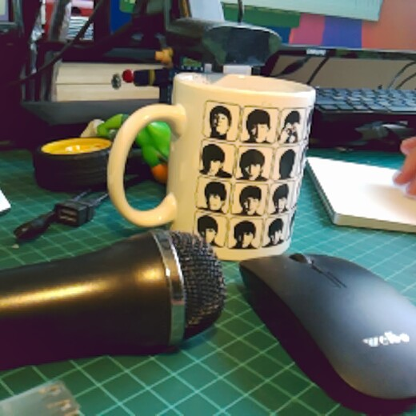
We got the description:
The image features a green table with various items on it. A
white mug adorned with black faces is prominently displayed, and
there are several other mugs scattered around the table as well.
In addition to the mugs, there's also a microphone placed near
them, suggesting that this might be an office or workspace
setting where someone could enjoy their coffee while recording
podcasts or audio content.
A computer keyboard can be seen in the background, indicating
that it is likely connected to a computer for work purposes. A
mouse and a cell phone are also present on the table, further
emphasizing the technology-oriented nature of this scene.
[INFO] ==> Total Duration: 82.57 secondsChanging the prompt in the image_description function to “Who are the faces in the mug?” gives:
==> AI Response:
The mug has a picture of the Beatles on it.In the Ollama_Python_Library Intro notebook, you can find the experiments with the Ollama Python library.
Calling the API Directly
An alternative to the Ollama Python library is to call the Ollama REST API directly. With the library, a query is:
response = ollama.generate(model=MODEL, prompt=QUERY)
result = response["response"]The same query as a direct API call is:
import requests
OLLAMA_URL = "http://localhost:11434/api"
response = requests.post(
f"{OLLAMA_URL}/generate",
json={"model": MODEL, "prompt": QUERY, "stream": False},
)
result = response.json().get("response", "")The library handles URL construction, request formatting, and response parsing. The main differences are:
| Aspect | Python library | Direct API calls |
|---|---|---|
| Error handling | Specific exceptions (e.g., ollama.ResponseError) |
Check response.status_code manually |
| Connection | Finds the server (OLLAMA_HOST or localhost:11434), with pooling and retries |
URL, retries, and pooling are up to the caller |
| Features | Generate, chat, embeddings, list, and pull, with simple streaming and type hints | Any endpoint, with full control of headers and timeouts |
| Dependencies | pip install ollama (uses httpx) |
Any HTTP library (requests, httpx, urllib) |
Use the Python library for standard applications that benefit from cleaner code, built-in error handling, and streaming support. Use direct API calls when you need fine-grained control over HTTP requests (timeouts, headers, proxies), must minimize dependencies, are debugging API issues, or need experimental endpoints. In practice, performance is the same: both make the same HTTP calls to the Ollama server.
Function Calling
Storing the model’s response in a variable lets us incorporate it into real-world projects. However, the model may give varying responses to the same input, and some answers it simply cannot compute. Function calling (also called tool calling) addresses both problems.
But what exactly is “function calling”?
In modern artificial intelligence, function calling with Large Language Models (LLMs) allows these models to perform actions beyond generating text. By integrating with external functions or APIs, LLMs can access real-time data, automate tasks, and interact with various systems.
For instance, instead of merely responding to a query about the weather, an LLM can call a weather API to fetch the current conditions and provide accurate, up-to-date information. This capability improves the relevance and accuracy of the model’s responses and turns the model into an active participant in real-world workflows.
For more details about Function Calling, please see this video made by Mervin Praison:
And this guide: Hugging Face Function Calling.
Using the SLM for Calculations
A simple calculation in Python, 123456*123456, returns 15,241,383,936. Ask an SLM to do the same task:
import ollama
response = ollama.chat(
model="llama3.2:3b",
messages=[
{
"role": "user",
"content": "What is 123456 multiplied by 123456? "
"Only give me the answer",
}
],
options={"temperature": 0},
)Examining the response, response.message.content, we get 51,131,441,376, which is completely wrong.
This is a fundamental limitation of LLMs: they are not calculators.
- LLMs predict text; they do not calculate. They predict the next most likely token based on patterns in their training data, so they produce what a plausible answer looks like, without performing arithmetic.
- Tokenization works against arithmetic. A number such as
"123456"might be split into the tokens["123", "456"]or["12", "34", "56"], which do not align with the digits a calculation needs. - Pattern matching is not computation. For simple problems (2 × 3), the model may recall a memorized fact. For larger numbers (123456 × 123456), there is no memorized pattern to fall back on.
Setting temperature=0 does not help either. It makes the output deterministic (same input, same output), not correct: the model gives the same wrong answer every time.
The following rough, illustrative estimates for small models (not measurements) show the trend:
| Problem Type | LLM Accuracy | Why |
|---|---|---|
| 2 + 2 | ~99% | Memorized in training |
| 47 + 89 | ~70% | Some pattern recognition |
| 123 × 456 | ~30% | Struggles with multi-digit |
| 123456 × 123456 | ~0% | No chance without computation |
| Calculate 15% tip on $47.83 | ~40% | Multi-step reasoning fails |
The solution is to use the LLM to understand the intent and use Python for the computation.
Use LLMs for natural language understanding and intent classification, but delegate actual computations to proper tools or functions. This is the core principle behind tool use and function calling in LLM applications.
Defining and Using a Tool
First, define the tool with a function schema, which tells the model the tool’s name, its purpose, and its arguments:
multiply_tool = {
"type": "function",
"function": {
"name": "multiply_numbers",
"description": "Multiply two numbers together",
"parameters": {
"type": "object",
"required": ["a", "b"],
"properties": {
"a": {"type": "number", "description": "First number"},
"b": {"type": "number", "description": "Second number"},
},
},
},
}Next, implement the function itself:
def multiply_numbers(a, b):
return {"result": float(a) * float(b)}Then create a function that handles the user query and calls the tool when the model asks for it:
def answer_query(query):
response = ollama.chat(
"llama3.2:3b",
messages=[{"role": "user", "content": query}],
tools=[multiply_tool],
)
# Check whether the model wants to call the tool
if response.message.tool_calls:
for tool in response.message.tool_calls:
if tool.function.name == "multiply_numbers":
result = multiply_numbers(**tool.function.arguments)
print(f"Result: {result['result']:,.2f}")
else:
print("It is not a multiplication")The argument tools=[multiply_tool] is now part of the Ollama call. Running the function gives the correct answer:
answer_query("What is 123456 multiplied by 123456?")Result: 15,241,383,936.00Can the same code answer general questions?
answer_query("What is the capital of Brazil?")Result: 1,000,000.00The result is wrong. The approach works when the tool is needed, but answering every kind of question correctly requires an agentic approach, in which the model decides whether to call a tool or answer directly.
A project to compute the distance to a capital city
Suppose we want an SLM to return the distance in km from the capital city of the country specified by the user to the user’s current location. This is not as simple as it sounds: entering only the country’s name is not always enough, and the SLM can give a different (and incorrect) answer every time.
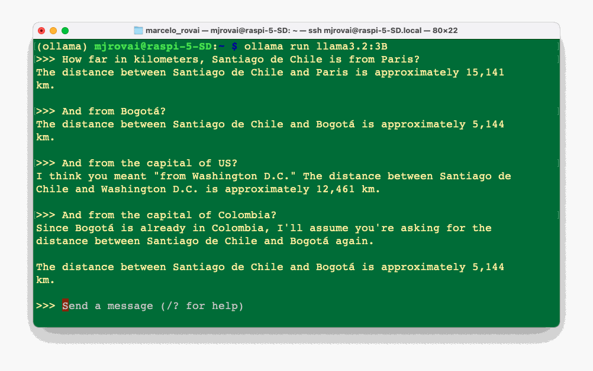
To mitigate this, create an app where the user enters a country’s name and gets, as an output, the distance in km from the capital city of that country to the app’s location (for simplicity, Santiago, Chile).
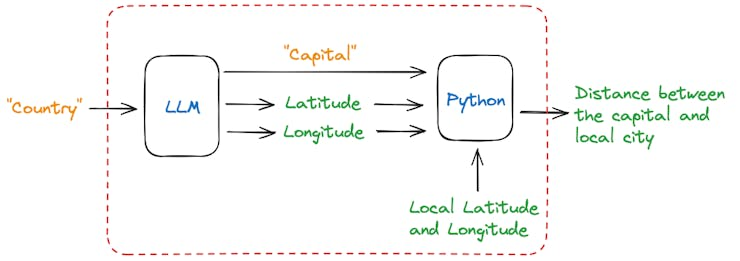
Once the user enters a country name, the model returns the capital city’s name (as a string) and its latitude and longitude (as floats). Using those coordinates, a simple Python library (haversine) computes the great-circle distance between the two points.
The project demonstrates a combination of language model interaction (AI) and geospatial calculations using the Haversine formula (traditional computing).
First, install the Haversine library:
pip install haversineThe Python script below asks the model for the coordinates of a country’s capital and calculates the distance from Santiago de Chile to that capital.
Importing Libraries
import time
from haversine import haversine
from ollama import chatBasic Variables and Model
MODEL = "llama3.2:3b" # The name of the model to be used
mylat = -33.33 # Latitude of Santiago de Chile
mylon = -70.51 # Longitude of Santiago de Chile- MODEL: Specifies the model being used, which is, in this example, Llama 3.2.
- mylat and mylon: Coordinates of Santiago de Chile, used as the starting point for the distance calculation.
Defining a Python Function That Acts as a Tool
def calc_distance(lat, lon, city):
"""Compute distance and print a descriptive message."""
distance = int(round(haversine((mylat, mylon), (lat, lon)), -1))
msg = (
f"\nSantiago de Chile is about {distance:,} "
f"kilometers away from {city}."
)
return {"city": city, "distance_km": distance, "message": msg}This is the Python function that Ollama is allowed to call. It takes the latitude, longitude, and city name as arguments, uses the haversine library to calculate the distance from Santiago to the target city (in km, the library’s default unit), and returns a dictionary with the distance and a human-readable message.
In Ollama’s terminology, this is a tool: a callable external function that the LLM may invoke.
Declaring the Tool Descriptor (Schema)
tools = [
{
"type": "function",
"function": {
"name": "calc_distance",
"description": "Calculates the distance from Santiago, "
"Chile to a given city's coordinates.",
"parameters": {
"type": "object",
"properties": {
"lat": {
"type": "number",
"description": "Latitude of the city",
},
"lon": {
"type": "number",
"description": "Longitude of the city",
},
"city": {
"type": "string",
"description": "Name of the city",
},
},
"required": ["lat", "lon", "city"],
},
},
}
]This JSON object describes the tool’s metadata and input schema, so that the LLM knows the function’s name, its purpose, and the types and descriptions of its arguments. The schema follows the OpenAI function-calling format, which Ollama (version 0.4 or later) supports. Defining tools this way also allows Ollama to validate the arguments before returning a call request.
Asking the Model to Use the Tool
country = "Colombia"
response = chat(
model=MODEL,
messages=[
{
"role": "user",
"content": "Find the decimal latitude and longitude of the "
f"capital of {country}, then use the calc_distance tool "
"to determine how far it is from Santiago de Chile.",
}
],
tools=tools,
)The prompt instructs the model first to identify the capital and its coordinates and then to invoke the tool (calc_distance) with those values. Ollama returns a structured response that may include a tool_calls section, indicating which tool to execute.
Executing the Model’s Tool Call
For country = "Colombia", the model returns:
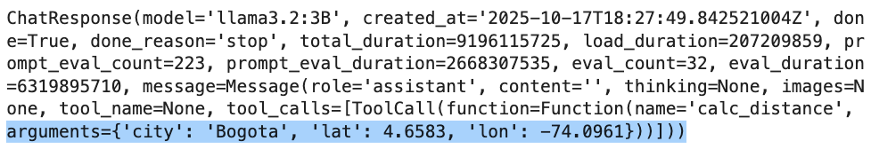
The arguments field holds the expected response in JSON format. To display the result, iterate over the tool_calls, extract the arguments (lat, lon, city), and run the local Python function with them:
for call in response.message.tool_calls:
if call.function.name == "calc_distance":
args = call.function.arguments
result = calc_distance(
float(args["lat"]), float(args["lon"]), args["city"]
)
print(result["message"])In this case:
Santiago de Chile is about 4,240 kilometers away from Bogota.Sometimes the model returns argument names that differ from the schema. Some LLMs (such as Llama 3.2 and Qwen 3) try to be helpful by naming the coordinates explicitly, lat1/lon1 for the origin and lat2/lon2 for the destination, even though the schema defines only lat and lon:
{"lat1": -33.33, "lon1": -70.51, "lat2": 48.8566, "lon2": 2.3522, "city": "Paris"}
A mapping step after decoding the tool-call arguments handles this:
import json
for call in response.message.tool_calls or []:
if call.function.name != "calc_distance":
continue
args = call.function.arguments
if isinstance(args, str):
args = json.loads(args)
# Normalize key names
if "lat2" in args or "lat1" in args:
args["lat"] = args.get("lat2") or args.get("lat1")
args["lon"] = args.get("lon2") or args.get("lon1")
if "latitude" in args:
args["lat"] = args["latitude"]
if "longitude" in args:
args["lon"] = args["longitude"]
result = calc_distance(
float(args["lat"]), float(args["lon"]), args["city"]
)
print(result["message"])Example Usage
Wrapping these steps in a function, ask_and_measure(country), that also measures the elapsed time with time.perf_counter(), we can enter different countries and always receive the same structured information:
ask_and_measure("France")
ask_and_measure("Colombia")
ask_and_measure("United States")Running the code as a script prints the results on the terminal:
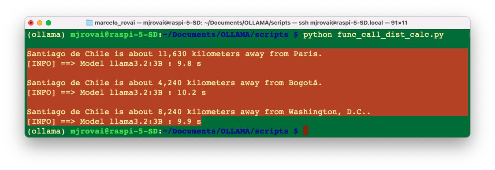
And the calculations are pretty good:
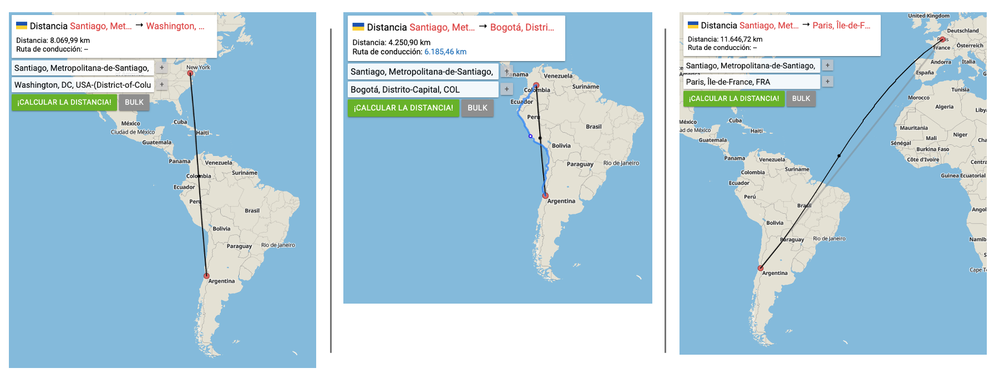
The complete script is at func_call_dist_calc.py and in the 10-Ollama_Function_Calling notebook.
Running with Other Models
This approach works only with models that support tools; Gemma 3 and Gemma 3n, for example, do not. An alternative is to describe the expected answer with a Pydantic model and pass its schema (model_json_schema()) as the response format. With this structured-output approach, models such as Gemma can also be used, as explored in the 20-Ollama_Function_Calling_Pydantic notebook.
Adding images
Now it is time to wrap up everything so far. The script below uses Pydantic so that, instead of entering the country name (as a text), the user enters an image, and the application (based on an SLM) returns the city in the image and its geographic location. With that data, the distance is calculated as before.
For simplicity, the code works in two steps. First, the model analyzes the image and creates a description (text). This text is then passed to a second call, where the model extracts the information needed.
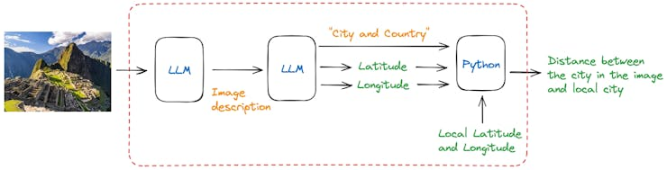
Start by importing the libraries:
import time
from haversine import haversine
from ollama import chat
from pydantic import BaseModel, FieldTo see the image when running the code in a Jupyter Notebook, also import:
import matplotlib.pyplot as plt
from PIL import ImageThose libraries are unnecessary when running the code as a script.
Now define the model and the local coordinates:
MODEL = "llava-phi3:3.8b"
mylat = -33.33
mylon = -70.51Download a new image, for example, Machu Picchu from Wikipedia, and display it in the notebook:
img_path = "image_test_3.jpg"
img = Image.open(img_path)
plt.figure(figsize=(8, 8))
plt.imshow(img)
plt.axis("off")
plt.show()
Next, define a function that receives the image and asks the model to return the decimal latitude and decimal longitude of the city in the image, its name, and what country it is located:
def image_description(img_path):
with open(img_path, "rb") as file:
response = chat(
model=MODEL,
messages=[
{
"role": "user",
"content": "return the decimal latitude and "
"decimal longitude of the city in the image, "
"its name, and what country it is located",
"images": [file.read()],
},
],
options={"temperature": 0},
)
return response["message"]["content"]Printing the entire response helps with debugging. In this case, the model returns something like:
'{\n "city": "Machu Picchu",\n "country": "Peru",\n "lat": -13.1631,\n "lon": -72.5450\n}\n'
A Pydantic model (CityCoord) describes the expected structure of the SLM’s response, with four fields: the city name, the country, the latitude, and the longitude:
class CityCoord(BaseModel):
city: str = Field(
..., description="Name of the city in the image"
)
country: str = Field(
..., description="Name of the country where the city is"
)
lat: float = Field(
..., description="Decimal latitude of the city in the image"
)
lon: float = Field(
..., description="Decimal longitude of the city in the image"
)The image description generated by the function is passed to the model again, now with the Pydantic schema as the response format:
description = image_description(img_path)
response = chat(
model=MODEL,
messages=[{"role": "user", "content": description}],
format=CityCoord.model_json_schema(), # Structured JSON format
options={"temperature": 0},
)
resp = CityCoord.model_validate_json(response.message.content)Now calculate and print the distance using haversine():
distance = haversine((mylat, mylon), (resp.lat, resp.lon), unit="km")
print(
f"\nThe image shows {resp.city}, with lat: "
f"{round(resp.lat, 2)} and long: {round(resp.lon, 2)}, "
f"located in {resp.country} and about "
f"{int(round(distance, -1)):,} kilometers away from "
f"Santiago, Chile.\n"
)And we will get:
The image shows Machu Picchu, with lat: -13.16 and long: -72.55,
located in Peru and about 2,250 kilometers away from Santiago,
Chile.In the 30-Function_Calling_with_images notebook, you can find experiments with multiple images.
Now download the script calc_distance_image.py from GitHub and run it on the terminal with the command:
python calc_distance_image.py \
/home/mjrovai/Documents/OLLAMA/image_test_3.jpgEnter the full path of the Machu Picchu image as an argument. We will get the same previous result.
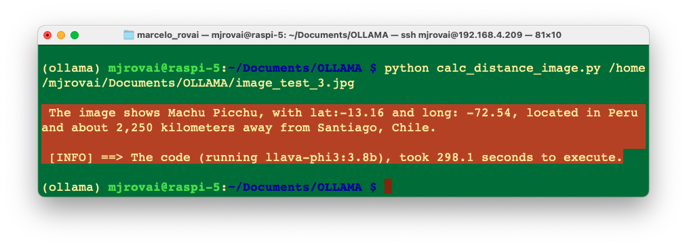
Changing the model to gemma3:4b:
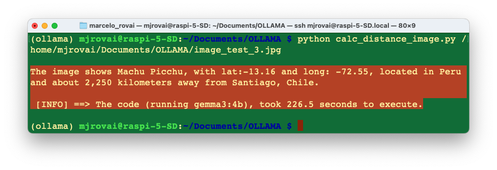
The app works with both models, and Gemma is faster.
How about Paris?
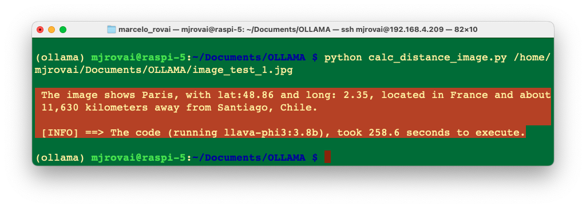
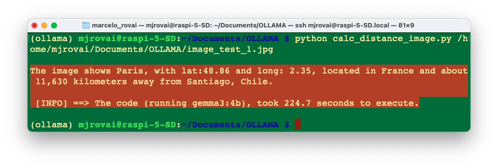
The code used here can be optimized in many ways. The aim is to show the potential of function calling with SLMs at the edge, allowing those models to integrate with external functions or APIs. Going beyond text generation, SLMs can access real-time data, automate tasks, and interact with various systems.
SLMs: Optimization Techniques
Large Language Models (LLMs) have changed natural language processing, but their deployment and optimization are difficult. One issue is the tendency for LLMs (and more, the SLMs) to generate plausible-sounding but factually incorrect information, a phenomenon known as hallucination. This occurs when models produce content that seems coherent but is not grounded in truth or real-world facts.
Other challenges include the immense computational resources required for training and running these models, the difficulty in maintaining up-to-date knowledge within the model, and the need for domain-specific adaptations. Privacy concerns also arise when handling sensitive data during training or inference. Ensuring consistent performance across diverse tasks and maintaining ethical use also remain challenges. Addressing these issues is necessary for the effective and responsible deployment of LLMs in real-world applications.
The main techniques for improving LLM (and SLM) performance and efficiency are Function (or Tool) Calling, Prompt engineering, Fine-tuning, and Retrieval-Augmented Generation (RAG).
Function (tool) calling lets models perform actions beyond generating text. By integrating with external functions or APIs, SLMs can access real-time data, automate tasks, and perform precise calculations, addressing the model’s limitations in mathematical operations, as shown in Section 0.5.5.
Fine-tuning, while more resource-intensive, offers a way to specialize LLMs for particular domains or tasks. This process involves further training the model on carefully curated datasets, allowing it to adapt its vast general knowledge to specific applications. Fine-tuning can lead to substantial improvements in performance, especially in specialized fields or for unique use cases.
Prompt engineering is the first step in LLM optimization. Carefully written input prompts guide models to produce more accurate and relevant outputs. This technique structures queries to draw on the model’s pre-trained knowledge, often adding examples or specific instructions to shape the response.
Retrieval-Augmented Generation (RAG) is another approach to improving LLM performance. It combines the vast knowledge embedded in pre-trained models with the ability to access and incorporate external, up-to-date information. By retrieving relevant data to supplement the model’s decision-making process, RAG can improve accuracy and reduce the likelihood of generating outdated or false information.
For edge applications, it is more beneficial to focus on techniques like function calling and RAG that can enhance model performance without needing on-device fine-tuning. The next section explores RAG.
RAG Implementation
In a basic interaction between a user and a language model, the user asks a question, which is sent as a prompt to the model. The model generates a response based solely on its pre-trained knowledge. In a RAG process, there is an additional step between the user’s question and the model’s response. The user’s question triggers a retrieval process from a knowledge base.
A simple RAG project
Here are the steps to implement a basic Retrieval Augmented Generation (RAG):
Determine the type of documents you will use: The best types are documents from which we can get clean and unobscured text. PDFs can be problematic because they are designed for printing, not for extracting sensible text. To work with PDFs, we should get the source document or use tools to handle it.
Chunk the text: The text cannot be stored as one long stream because of context size limitations and the potential for confusion. Chunking involves splitting the text into smaller pieces. Chunk text has many ways, such as character count, tokens, words, paragraphs, or sections. It is also possible to overlap chunks.
Create embeddings: Embeddings are numerical representations of text that capture semantic meaning. We create embeddings by passing each chunk of text through a particular embedding model. The model outputs a vector, the length of which depends on the embedding model used. We should pull one (or more) embedding models from Ollama, to perform this task. Here are some examples of embedding models available at Ollama.
| Model | Parameter Size | Embedding Size |
|---|---|---|
| mxbai-embed-large | 334M | 1024 |
| nomic-embed-text | 137M | 768 |
| all-minilm | 23M | 384 |
> Generally, larger embedding sizes capture more nuanced information about the input. Still, they also require more computational resources to process, and a higher number of parameters should increase the latency (but also the quality of the response).Store the chunks and embeddings in a vector database: We will need a way to efficiently find the most relevant chunks of text for a given prompt, which is where a vector database comes in. We will use Chromadb, an AI-native open-source vector database, which simplifies building RAGs by creating knowledge, facts, and skills pluggable for LLMs. Both the embedding and the source text for each chunk are stored.
Build the prompt: When we have a question, we create an embedding and query the vector database for the most similar chunks. Then, we select the top few results and include their text in the prompt.
The goal of RAG is to provide the model with the most relevant information from our documents, allowing it to generate more accurate and informative responses. The next example implements a simple SLM that incorporates a particular set of facts about bees (“Bee Facts”).
Inside the ollama env, enter the command in the terminal for Chromadb installation:
pip install ollama chromadbPull an intermediate embedding model, nomic-embed-text
ollama pull nomic-embed-textAnd create a working directory:
cd Documents/OLLAMA/
mkdir RAG-simple-bee
cd RAG-simple-bee/Create a new Jupyter notebook, 40-RAG-simple-bee for some exploration:
Import the needed libraries:
import ollama
import chromadb
import timeAnd define aor models:
EMB_MODEL = "nomic-embed-text"
MODEL = "llama3.2:3B"Initially, a knowledge base about bee facts should be created. This involves collecting relevant documents and converting them into vector embeddings. These embeddings are then stored in a vector database, allowing for efficient similarity searches later. Enter the “document,” a base of “bee facts,” as a list:
documents = [
"Bee-keeping, also known as apiculture, involves the \
maintenance of bee colonies, typically in hives, by humans.",
"The most commonly kept species of bees is the European \
honey bee (Apis mellifera).",
...
"There are another 20,000 different bee species in \
the world.",
"Brazil alone has more than 300 different bee species, and \
the vast majority, unlike western honey bees, don’t sting.",
"Reports written in 1577 by Hans Staden, mention three \
native bees used by indigenous people in Brazil.", \
"The indigenous people in Brazil used bees for medicine \
and food purposes",
"From Hans Staden report: probable species: mandaçaia \
(Melipona quadrifasciata), mandaguari (Scaptotrigona \
postica) and jataí-amarela (Tetragonisca angustula)."
]We do not need to “chunk” the document here because we will use each element of the list and a chunk.
Now create the vector embedding database bee_facts and store the document in it:
client = chromadb.Client()
collection = client.create_collection(name="bee_facts")
# store each document in a vector embedding database
for i, d in enumerate(documents):
response = ollama.embeddings(model=EMB_MODEL, prompt=d)
embedding = response["embedding"]
collection.add(
ids=[str(i)], embeddings=[embedding], documents=[d]
)With the “Knowledge Base” created, queries can retrieve data from it:
User Query: The process begins when a user asks a question, such as “How many bees are in a colony? Who lays eggs, and how much? How about common pests and diseases?”
prompt = "How many bees are in a colony? Who lays eggs and \
how much? How about common pests and diseases?"Query Embedding: The user’s question is converted into a vector embedding using the same embedding model used for the knowledge base.
response = ollama.embeddings(prompt=prompt, model=EMB_MODEL)Relevant Document Retrieval: The system searches the knowledge base using the query embedding to find the most relevant documents (in this case, the 5 more probable). This is done using a similarity search, which compares the query embedding to the document embeddings in the database.
results = collection.query(
query_embeddings=[response["embedding"]], n_results=5
)
data = results["documents"]Prompt Augmentation: The retrieved relevant information is combined with the original user query to create an augmented prompt. This prompt now contains the user’s question and pertinent facts from the knowledge base.
prompt = (
f"Using this data: {data}. " f"Respond to this prompt: {prompt}"
)Answer Generation: The augmented prompt is then fed into a language model, in this case, the llama3.2:3b model. The model uses this enriched context to generate the answer. Parameters like temperature, top_k, and top_p are set to control the randomness and quality of the generated response.
output = ollama.generate(
model=MODEL,
prompt = (
f"Using this data: {data}. "
f"Respond to this prompt: {prompt}"
)
options={
"temperature": 0.0,
"top_k":10,
"top_p":0.5 }
)Response Delivery: Finally, the system returns the generated answer to the user.
print(output["response"])Based on the provided data, here are the answers to your \
questions:
1. How many bees are in a colony?
A typical bee colony can contain between 20,000 and 80,000 bees.
2. Who lays eggs and how much?
The queen bee lays up to 2,000 eggs per day during peak seasons.
3. What about common pests and diseases?
Common pests and diseases that affect bees include varroa \
mites, hive beetles, and foulbrood.Create a function to answer new questions:
def rag_bees(prompt, n_results=5, temp=0.0, top_k=10, top_p=0.5):
start_time = time.perf_counter() # Start timing
# generate an embedding for the prompt and retrieve the data
response = ollama.embeddings(
prompt=prompt,
model=EMB_MODEL
)
results = collection.query(
query_embeddings=[response["embedding"]],
n_results=n_results
)
data = results['documents']
# generate a response combining the prompt and data retrieved
output = ollama.generate(
model=MODEL,
prompt = (
f"Using this data: {data}. "
f"Respond to this prompt: {prompt}"
)
options={
"temperature": temp,
"top_k": top_k,
"top_p": top_p }
)
print(output['response'])
end_time = time.perf_counter() # End timing
elapsed_time = round(
(end_time - start_time), 1
) # Calculate elapsed time
print(
f"\n[INFO] ==> The code for model: {MODEL}, "
f"took {elapsed_time}s to generate the answer.\n"
)
print(
f"\n[INFO] ==> The code for model: {MODEL}, "
f"took {elapsed_time}s to generate the answer.\n"
)We can now create queries and call the function:
prompt = "Are bees in Brazil?"
rag_bees(prompt)Yes, bees are found in Brazil. According to the data, Brazil \
has more than 300 different bee species, and indigenous people \
in Brazil used bees for medicine and food purposes. \
Additionally, reports from 1577 mention three native bees \
used by indigenous people in Brazil.
[INFO] ==> The code for model: llama3.2:3b, took 22.7s to \
generate the answer.By the way, if the model used supports multiple languages, we can use it (for example, Portuguese), even if the dataset was created in English:
prompt = "Existem abelhas no Brazil?"
rag_bees(prompt)Sim, existem abelhas no Brasil! De acordo com o relato de Hans \
Staden, há três espécies de abelhas nativas do Brasil que \
foram mencionadas: mandaçaia (Melipona quadrifasciata), \
mandaguari (Scaptotrigona postica) e jataí-amarela \
(Tetragonisca angustula). Além disso, o Brasil é conhecido \
por ter mais de 300 espécies diferentes de abelhas, a \
maioria das quais não é agressiva e não põe veneno.
[INFO] ==> The code for model: llama3.2:3b, took 54.6s to \
generate the answer.Going Further
The small LLM models tested worked well at the edge, both with text and with images, but they had high latency with images. A combination of specific and dedicated models can lead to better results; for example, in real cases, an Object Detection model (such as YOLO) can get a general description and count of objects on an image that, once passed to an LLM, can help extract insights and actions.
According to Avi Baum, CTO at Hailo,
In the vast landscape of artificial intelligence (AI), one of the most intriguing journeys has been the evolution of AI on the edge. This journey has taken us from classic machine vision to the realms of discriminative AI, enhancive AI, and now, the groundbreaking frontier of generative AI. Each step has brought us closer to a future where intelligent systems seamlessly integrate with our daily lives, offering an immersive experience of not just perception but also creation at the palm of our hand.
Summary
This lab showed how a Raspberry Pi 5 can serve as an AI hub that runs language models for real-time, on-site data analysis using Ollama and Python. Together with lightweight LLMs like Llama 3.2, Gemma 3, and MoonDream, the Raspberry Pi is a suitable platform for edge computing applications.
Two techniques make these small models more useful in practice. Function calling turns an SLM from a text generator into a component that calls external tools, following one principle:
Use SLMs for intent classification and understanding, while delegating specific tasks to specialized functions that guarantee accuracy.
RAG grounds the model’s answers in a local knowledge base, reducing hallucinations without the cost of retraining or fine-tuning. Both work offline once the models and the knowledge base are in place, which makes them well suited to edge applications.
Running LLMs on the edge extends beyond simple data processing, as in this lab’s examples. Some suggested uses for this project:
1. Smart Home Automation:
- Integrate SLMs to interpret voice commands or analyze sensor data for intelligent home automation. This could include real-time monitoring and control of home devices, security systems, and energy management, all processed locally without relying on cloud services.
2. Field Data Collection and Analysis:
- Deploy SLMs on Raspberry Pi in remote or mobile setups for real-time data collection and analysis. This can be used in agriculture to monitor crop health, in environmental studies for wildlife tracking, or in disaster response for situational awareness and resource management.
3. Educational Tools:
- Create interactive educational tools that use SLMs to provide instant feedback, language translation, and tutoring. This can be useful in developing regions with limited access to advanced technology and internet connectivity.
4. Healthcare Applications:
- Use SLMs for medical diagnostics and patient monitoring. They can provide real-time analysis of symptoms and suggest potential treatments. This can be integrated into telemedicine platforms or portable health devices.
5. Local Business Intelligence:
- Implement SLMs in retail or small business environments to analyze customer behavior, manage inventory, and optimize operations. The ability to process data locally ensures privacy and reduces dependency on external services.
6. Industrial IoT:
- Integrate SLMs into industrial IoT systems for predictive maintenance, quality control, and process optimization. The Raspberry Pi can serve as a local data processing unit, reducing latency and improving the reliability of automated systems.
7. Autonomous Vehicles:
- Use SLMs to process sensory data from autonomous vehicles, enabling real-time decision-making and navigation. This can be applied to drones, robots, and self-driving cars to improve autonomy and safety.
8. Cultural Heritage and Tourism:
- Implement SLMs as interactive guides for cultural heritage sites and museums. Visitors can get real-time information without internet connectivity.
9. Artistic and Creative Projects:
- Use SLMs to analyze and generate creative content, such as music, art, and literature. This can support projects in the creative industries and interactive experiences in exhibitions and performances.
10. Customized Assistive Technologies:
- Develop assistive technologies for individuals with disabilities, providing personalized and adaptive support through real-time text-to-speech, language translation, and other accessible tools.